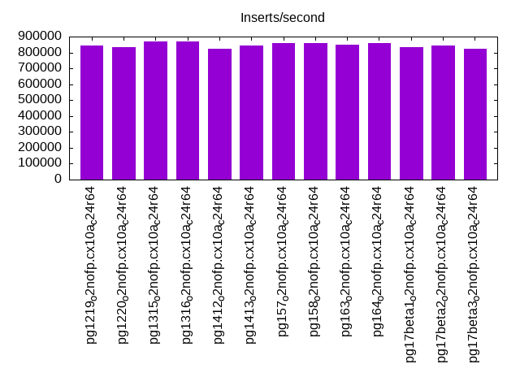

This is a report for the insert benchmark with 80M docs and 8 client(s). It is generated by scripts (bash, awk, sed) and Tufte might not be impressed. An overview of the insert benchmark is here and a short update is here. Below, by DBMS, I mean DBMS+version.config. An example is my8020.c10b40 where my means MySQL, 8020 is version 8.0.20 and c10b40 is the name for the configuration file.
The test server has is a c2d-standard-30 with HT off, 16 cores, 64G RAM, Ubuntu 22.04 and ext4 using SW RAID 0 and 2 NVMe devices. The benchmark was run with 8 clients and there were 1 or 3 connections per client (1 for queries or inserts without rate limits, 1+1 for rate limited inserts+deletes). It uses 8 table with a table per client. It loads 10M rows per table without secondary indexes, creates 3 secondary indexes per table, then inserts 40m+10m rows per table with a delete per insert to avoid growing the table. It then does 6 read+write tests for 1800s each that do queries as fast as possible with 100,100,500,500,1000,1000 inserts/s and the same for deletes/s per client concurrent with the queries. The database is cached in memory. Clients and the DBMS share one server. The per-database configs are in the per-database subdirectories here.
The tested DBMS are:
The numbers are inserts/s for l.i0, l.i1 and l.i2, indexed docs (or rows) /s for l.x and queries/s for qr100, qp100 thru qr1000, qp1000" The values are the average rate over the entire test for inserts (IPS) and queries (QPS). The range of values for IPS and QPS is split into 3 parts: bottom 25%, middle 50%, top 25%. Values in the bottom 25% have a red background, values in the top 25% have a green background and values in the middle have no color. A gray background is used for values that can be ignored because the DBMS did not sustain the target insert rate. Red backgrounds are not used when the minimum value is within 80% of the max value.
| dbms | l.i0 | l.x | l.i1 | l.i2 | qr100 | qp100 | qr500 | qp500 | qr1000 | qp1000 |
|---|---|---|---|---|---|---|---|---|---|---|
| pg1219_o2nofp.cx10a_c24r64 | 842105 | 1632655 | 213476 | 50601 | 101514 | 46664 | 98276 | 46480 | 95338 | 45972 |
| pg1220_o2nofp.cx10a_c24r64 | 833333 | 1600002 | 214909 | 51282 | 101366 | 47063 | 99590 | 46752 | 96474 | 46184 |
| pg1315_o2nofp.cx10a_c24r64 | 869565 | 1600002 | 217391 | 49020 | 101270 | 47118 | 99726 | 46637 | 96470 | 46039 |
| pg1316_o2nofp.cx10a_c24r64 | 869565 | 1600002 | 214765 | 50569 | 101433 | 46635 | 98965 | 46525 | 96275 | 45994 |
| pg1412_o2nofp.cx10a_c24r64 | 824742 | 1568629 | 226950 | 50251 | 103331 | 46700 | 100982 | 46365 | 98556 | 45958 |
| pg1413_o2nofp.cx10a_c24r64 | 842105 | 1568629 | 222841 | 49875 | 103774 | 46727 | 99506 | 46234 | 98155 | 45855 |
| pg157_o2nofp.cx10a_c24r64 | 860215 | 1632655 | 228245 | 51118 | 105202 | 46517 | 101632 | 46263 | 99144 | 45753 |
| pg158_o2nofp.cx10a_c24r64 | 860215 | 1632655 | 222377 | 48662 | 101296 | 46493 | 100707 | 46098 | 98144 | 45597 |
| pg163_o2nofp.cx10a_c24r64 | 851064 | 1632655 | 224561 | 50601 | 103286 | 45903 | 100988 | 45650 | 98392 | 44965 |
| pg164_o2nofp.cx10a_c24r64 | 860215 | 1666669 | 226308 | 50794 | 104537 | 46075 | 102450 | 45804 | 99512 | 45344 |
| pg17beta1_o2nofp.cx10a_c24r64 | 833333 | 1632655 | 234949 | 48280 | 105469 | 46066 | 103144 | 45754 | 102356 | 45196 |
| pg17beta2_o2nofp.cx10a_c24r64 | 842105 | 1632655 | 235641 | 47847 | 105243 | 45949 | 102958 | 45735 | 102396 | 45381 |
| pg17beta3_o2nofp.cx10a_c24r64 | 824742 | 1632655 | 232727 | 46647 | 105359 | 45962 | 103006 | 45527 | 102563 | 45044 |
This table has relative throughput, throughput for the DBMS relative to the DBMS in the first line, using the absolute throughput from the previous table. Values less than 0.95 have a yellow background. Values greater than 1.05 have a blue background.
| dbms | l.i0 | l.x | l.i1 | l.i2 | qr100 | qp100 | qr500 | qp500 | qr1000 | qp1000 |
|---|---|---|---|---|---|---|---|---|---|---|
| pg1219_o2nofp.cx10a_c24r64 | 1.00 | 1.00 | 1.00 | 1.00 | 1.00 | 1.00 | 1.00 | 1.00 | 1.00 | 1.00 |
| pg1220_o2nofp.cx10a_c24r64 | 0.99 | 0.98 | 1.01 | 1.01 | 1.00 | 1.01 | 1.01 | 1.01 | 1.01 | 1.00 |
| pg1315_o2nofp.cx10a_c24r64 | 1.03 | 0.98 | 1.02 | 0.97 | 1.00 | 1.01 | 1.01 | 1.00 | 1.01 | 1.00 |
| pg1316_o2nofp.cx10a_c24r64 | 1.03 | 0.98 | 1.01 | 1.00 | 1.00 | 1.00 | 1.01 | 1.00 | 1.01 | 1.00 |
| pg1412_o2nofp.cx10a_c24r64 | 0.98 | 0.96 | 1.06 | 0.99 | 1.02 | 1.00 | 1.03 | 1.00 | 1.03 | 1.00 |
| pg1413_o2nofp.cx10a_c24r64 | 1.00 | 0.96 | 1.04 | 0.99 | 1.02 | 1.00 | 1.01 | 0.99 | 1.03 | 1.00 |
| pg157_o2nofp.cx10a_c24r64 | 1.02 | 1.00 | 1.07 | 1.01 | 1.04 | 1.00 | 1.03 | 1.00 | 1.04 | 1.00 |
| pg158_o2nofp.cx10a_c24r64 | 1.02 | 1.00 | 1.04 | 0.96 | 1.00 | 1.00 | 1.02 | 0.99 | 1.03 | 0.99 |
| pg163_o2nofp.cx10a_c24r64 | 1.01 | 1.00 | 1.05 | 1.00 | 1.02 | 0.98 | 1.03 | 0.98 | 1.03 | 0.98 |
| pg164_o2nofp.cx10a_c24r64 | 1.02 | 1.02 | 1.06 | 1.00 | 1.03 | 0.99 | 1.04 | 0.99 | 1.04 | 0.99 |
| pg17beta1_o2nofp.cx10a_c24r64 | 0.99 | 1.00 | 1.10 | 0.95 | 1.04 | 0.99 | 1.05 | 0.98 | 1.07 | 0.98 |
| pg17beta2_o2nofp.cx10a_c24r64 | 1.00 | 1.00 | 1.10 | 0.95 | 1.04 | 0.98 | 1.05 | 0.98 | 1.07 | 0.99 |
| pg17beta3_o2nofp.cx10a_c24r64 | 0.98 | 1.00 | 1.09 | 0.92 | 1.04 | 0.98 | 1.05 | 0.98 | 1.08 | 0.98 |
This lists the average rate of inserts/s for the tests that do inserts concurrent with queries. For such tests the query rate is listed in the table above. The read+write tests are setup so that the insert rate should match the target rate every second. Cells that are not at least 95% of the target have a red background to indicate a failure to satisfy the target.
| dbms | qr100.L1 | qp100.L2 | qr500.L3 | qp500.L4 | qr1000.L5 | qp1000.L6 |
|---|---|---|---|---|---|---|
| pg1219_o2nofp.cx10a_c24r64 | 796 | 796 | 3980 | 3980 | 7956 | 7960 |
| pg1220_o2nofp.cx10a_c24r64 | 796 | 796 | 3980 | 3980 | 7960 | 7960 |
| pg1315_o2nofp.cx10a_c24r64 | 796 | 796 | 3980 | 3980 | 7960 | 7960 |
| pg1316_o2nofp.cx10a_c24r64 | 796 | 796 | 3980 | 3980 | 7960 | 7960 |
| pg1412_o2nofp.cx10a_c24r64 | 796 | 796 | 3980 | 3980 | 7960 | 7960 |
| pg1413_o2nofp.cx10a_c24r64 | 796 | 796 | 3980 | 3980 | 7960 | 7960 |
| pg157_o2nofp.cx10a_c24r64 | 796 | 796 | 3980 | 3980 | 7960 | 7960 |
| pg158_o2nofp.cx10a_c24r64 | 796 | 796 | 3980 | 3980 | 7960 | 7960 |
| pg163_o2nofp.cx10a_c24r64 | 796 | 796 | 3980 | 3980 | 7960 | 7960 |
| pg164_o2nofp.cx10a_c24r64 | 796 | 796 | 3980 | 3980 | 7960 | 7960 |
| pg17beta1_o2nofp.cx10a_c24r64 | 796 | 796 | 3980 | 3980 | 7960 | 7960 |
| pg17beta2_o2nofp.cx10a_c24r64 | 796 | 796 | 3980 | 3980 | 7960 | 7960 |
| pg17beta3_o2nofp.cx10a_c24r64 | 796 | 796 | 3980 | 3980 | 7956 | 7960 |
| target | 800 | 800 | 4000 | 4000 | 8000 | 8000 |
l.i0: load without secondary indexes. Graphs for performance per 1-second interval are here.
Average throughput:
Insert response time histogram: each cell has the percentage of responses that take <= the time in the header and max is the max response time in seconds. For the max column values in the top 25% of the range have a red background and in the bottom 25% of the range have a green background. The red background is not used when the min value is within 80% of the max value.
| dbms | 256us | 1ms | 4ms | 16ms | 64ms | 256ms | 1s | 4s | 16s | gt | max |
|---|---|---|---|---|---|---|---|---|---|---|---|
| pg1219_o2nofp.cx10a_c24r64 | 98.374 | 1.533 | 0.071 | 0.004 | 0.001 | 0.016 | 0.967 | ||||
| pg1220_o2nofp.cx10a_c24r64 | 98.370 | 1.529 | 0.086 | 0.002 | 0.002 | 0.011 | 0.001 | 1.017 | |||
| pg1315_o2nofp.cx10a_c24r64 | 98.279 | 1.623 | 0.073 | 0.006 | 0.003 | 0.016 | 0.828 | ||||
| pg1316_o2nofp.cx10a_c24r64 | 98.288 | 1.602 | 0.090 | 0.004 | nonzero | 0.015 | 0.796 | ||||
| pg1412_o2nofp.cx10a_c24r64 | 98.106 | 1.772 | 0.100 | 0.005 | 0.002 | 0.015 | 0.976 | ||||
| pg1413_o2nofp.cx10a_c24r64 | 98.216 | 1.698 | 0.068 | 0.006 | 0.002 | 0.008 | 0.002 | 1.532 | |||
| pg157_o2nofp.cx10a_c24r64 | 98.193 | 1.708 | 0.077 | 0.005 | 0.004 | 0.013 | 0.875 | ||||
| pg158_o2nofp.cx10a_c24r64 | 98.108 | 1.799 | 0.068 | 0.007 | 0.003 | 0.014 | 0.880 | ||||
| pg163_o2nofp.cx10a_c24r64 | 98.192 | 1.705 | 0.079 | 0.006 | 0.004 | 0.013 | 0.935 | ||||
| pg164_o2nofp.cx10a_c24r64 | 98.267 | 1.640 | 0.073 | 0.003 | 0.002 | 0.014 | 0.001 | 1.235 | |||
| pg17beta1_o2nofp.cx10a_c24r64 | 93.536 | 6.371 | 0.073 | 0.004 | 0.002 | 0.013 | 0.766 | ||||
| pg17beta2_o2nofp.cx10a_c24r64 | 93.613 | 6.301 | 0.067 | 0.004 | 0.001 | 0.014 | 0.815 | ||||
| pg17beta3_o2nofp.cx10a_c24r64 | 92.989 | 6.930 | 0.061 | 0.003 | 0.002 | 0.014 | nonzero | 1.350 |
Performance metrics for the DBMS listed above. Some are normalized by throughput, others are not. Legend for results is here.
ips qps rps rmbps wps wmbps rpq rkbpq wpi wkbpi csps cpups cspq cpupq dbgb1 dbgb2 rss maxop p50 p99 tag 842105 0 0 0.0 1460.0 354.6 0.000 0.000 0.002 0.431 76048 61.7 0.090 12 7.7 20.7 5.4 0.967 141448 21377 pg1219_o2nofp.cx10a_c24r64 833333 0 0 0.0 1453.3 354.6 0.000 0.000 0.002 0.436 76405 61.5 0.092 12 7.7 20.7 5.8 1.017 141948 15188 pg1220_o2nofp.cx10a_c24r64 869565 0 0 0.0 1518.9 375.4 0.000 0.000 0.002 0.442 79080 63.5 0.091 12 7.7 20.7 4.0 0.828 146145 15783 pg1315_o2nofp.cx10a_c24r64 869565 0 0 0.0 1523.2 375.8 0.000 0.000 0.002 0.442 78799 63.5 0.091 12 7.7 20.7 4.5 0.796 145745 14185 pg1316_o2nofp.cx10a_c24r64 824742 0 0 0.0 1452.4 354.2 0.000 0.000 0.002 0.440 76920 62.5 0.093 12 7.7 20.7 0.3 0.976 139789 25173 pg1412_o2nofp.cx10a_c24r64 842105 0 0 0.0 1449.4 353.8 0.000 0.000 0.002 0.430 77263 62.5 0.092 12 7.7 20.7 0.3 1.532 139051 21177 pg1413_o2nofp.cx10a_c24r64 860215 0 0 0.0 1492.3 370.4 0.000 0.000 0.002 0.441 79422 63.4 0.092 12 7.7 20.7 6.0 0.875 142647 24374 pg157_o2nofp.cx10a_c24r64 860215 0 0 0.0 1496.7 371.8 0.000 0.000 0.002 0.443 79146 63.6 0.092 12 7.7 20.7 0.3 0.880 143148 12087 pg158_o2nofp.cx10a_c24r64 851064 0 0 0.0 1494.6 373.7 0.000 0.000 0.002 0.450 79392 63.5 0.093 12 7.7 20.7 4.9 0.935 143947 15288 pg163_o2nofp.cx10a_c24r64 860215 0 0 0.0 1486.0 371.9 0.000 0.000 0.002 0.443 79064 63.7 0.092 12 7.7 20.7 1.6 1.235 143847 18680 pg164_o2nofp.cx10a_c24r64 833333 0 0 0.0 1429.2 352.1 0.000 0.000 0.002 0.433 79464 61.0 0.095 12 7.7 20.7 0.2 0.766 135994 17981 pg17beta1_o2nofp.cx10a_c24r64 842105 0 0 0.0 1422.3 354.2 0.000 0.000 0.002 0.431 79727 60.5 0.095 11 7.7 20.7 0.2 0.815 139650 24573 pg17beta2_o2nofp.cx10a_c24r64 824742 0 0 0.0 1431.2 351.6 0.000 0.000 0.002 0.437 79104 61.0 0.096 12 7.7 20.7 0.2 1.350 135855 23575 pg17beta3_o2nofp.cx10a_c24r64
l.x: create secondary indexes.
Average throughput:
Performance metrics for the DBMS listed above. Some are normalized by throughput, others are not. Legend for results is here.
ips qps rps rmbps wps wmbps rpq rkbpq wpi wkbpi csps cpups cspq cpupq dbgb1 dbgb2 rss maxop p50 p99 tag 1632655 0 0 0.0 1246.5 458.4 0.000 0.000 0.001 0.287 18215 28.9 0.011 3 15.4 35.4 6.5 0.002 NA NA pg1219_o2nofp.cx10a_c24r64 1600002 0 0 0.0 1251.7 462.9 0.000 0.000 0.001 0.296 18360 27.3 0.011 3 15.4 35.4 6.5 0.002 NA NA pg1220_o2nofp.cx10a_c24r64 1600002 0 0 0.0 1218.5 455.6 0.000 0.000 0.001 0.292 16110 27.3 0.010 3 15.4 35.5 6.5 0.002 NA NA pg1315_o2nofp.cx10a_c24r64 1600002 0 0 0.0 1209.9 452.2 0.000 0.000 0.001 0.289 15876 27.4 0.010 3 15.4 35.5 3.8 0.002 NA NA pg1316_o2nofp.cx10a_c24r64 1568629 0 0 0.0 1217.2 451.0 0.000 0.000 0.001 0.294 15276 27.9 0.010 3 15.4 35.5 6.5 0.002 NA NA pg1412_o2nofp.cx10a_c24r64 1568629 0 0 0.0 1250.0 459.8 0.000 0.000 0.001 0.300 16245 27.1 0.010 3 15.4 35.5 6.5 0.002 NA NA pg1413_o2nofp.cx10a_c24r64 1632655 0 0 0.0 1223.6 456.8 0.000 0.000 0.001 0.287 17082 27.7 0.010 3 15.4 35.5 6.5 0.002 NA NA pg157_o2nofp.cx10a_c24r64 1632655 0 0 0.0 1213.6 455.0 0.000 0.000 0.001 0.285 16378 28.3 0.010 3 15.4 35.5 6.5 0.002 NA NA pg158_o2nofp.cx10a_c24r64 1632655 0 0 0.0 1228.6 458.0 0.000 0.000 0.001 0.287 16842 27.9 0.010 3 15.4 35.5 6.5 0.026 NA NA pg163_o2nofp.cx10a_c24r64 1666669 0 0 0.0 1245.7 463.5 0.000 0.000 0.001 0.285 17262 27.4 0.010 3 15.4 35.5 6.5 0.002 NA NA pg164_o2nofp.cx10a_c24r64 1632655 0 0 0.0 1160.9 424.2 0.000 0.000 0.001 0.266 8197 26.8 0.005 3 15.4 35.4 5.9 0.002 NA NA pg17beta1_o2nofp.cx10a_c24r64 1632655 0 0 0.0 1179.2 431.7 0.000 0.000 0.001 0.271 8198 26.5 0.005 3 15.4 35.4 6.0 0.022 NA NA pg17beta2_o2nofp.cx10a_c24r64 1632655 0 0 0.0 1172.6 427.1 0.000 0.000 0.001 0.268 8200 26.2 0.005 3 15.4 35.4 6.0 0.002 NA NA pg17beta3_o2nofp.cx10a_c24r64
l.i1: continue load after secondary indexes created with 50 inserts per transaction. Graphs for performance per 1-second interval are here.
Average throughput:
Insert response time histogram: each cell has the percentage of responses that take <= the time in the header and max is the max response time in seconds. For the max column values in the top 25% of the range have a red background and in the bottom 25% of the range have a green background. The red background is not used when the min value is within 80% of the max value.
| dbms | 256us | 1ms | 4ms | 16ms | 64ms | 256ms | 1s | 4s | 16s | gt | max |
|---|---|---|---|---|---|---|---|---|---|---|---|
| pg1219_o2nofp.cx10a_c24r64 | 19.623 | 77.497 | 2.704 | 0.165 | 0.010 | nonzero | 0.608 | ||||
| pg1220_o2nofp.cx10a_c24r64 | 19.478 | 77.657 | 2.691 | 0.162 | 0.011 | nonzero | 0.423 | ||||
| pg1315_o2nofp.cx10a_c24r64 | 20.713 | 76.668 | 2.438 | 0.171 | 0.009 | nonzero | 0.368 | ||||
| pg1316_o2nofp.cx10a_c24r64 | 19.978 | 77.124 | 2.718 | 0.171 | 0.009 | nonzero | 0.391 | ||||
| pg1412_o2nofp.cx10a_c24r64 | 21.982 | 75.999 | 1.829 | 0.182 | 0.007 | nonzero | 0.422 | ||||
| pg1413_o2nofp.cx10a_c24r64 | 22.339 | 75.309 | 2.164 | 0.179 | 0.008 | 0.001 | 0.464 | ||||
| pg157_o2nofp.cx10a_c24r64 | 22.456 | 75.607 | 1.753 | 0.177 | 0.007 | nonzero | 0.385 | ||||
| pg158_o2nofp.cx10a_c24r64 | 20.076 | 77.658 | 2.076 | 0.182 | 0.008 | nonzero | 0.481 | ||||
| pg163_o2nofp.cx10a_c24r64 | 21.211 | 76.636 | 1.973 | 0.174 | 0.006 | nonzero | 0.268 | ||||
| pg164_o2nofp.cx10a_c24r64 | 21.637 | 76.425 | 1.750 | 0.182 | 0.005 | 0.001 | 0.336 | ||||
| pg17beta1_o2nofp.cx10a_c24r64 | 26.818 | 71.716 | 1.276 | 0.185 | 0.004 | 0.001 | 0.912 | ||||
| pg17beta2_o2nofp.cx10a_c24r64 | 27.319 | 71.200 | 1.291 | 0.184 | 0.006 | 0.001 | 0.521 | ||||
| pg17beta3_o2nofp.cx10a_c24r64 | 26.550 | 71.765 | 1.499 | 0.180 | 0.004 | 0.001 | 0.649 |
Delete response time histogram: each cell has the percentage of responses that take <= the time in the header and max is the max response time in seconds. For the max column values in the top 25% of the range have a red background and in the bottom 25% of the range have a green background. The red background is not used when the min value is within 80% of the max value.
| dbms | 256us | 1ms | 4ms | 16ms | 64ms | 256ms | 1s | 4s | 16s | gt | max |
|---|---|---|---|---|---|---|---|---|---|---|---|
| pg1219_o2nofp.cx10a_c24r64 | 24.464 | 73.989 | 1.402 | 0.137 | 0.007 | nonzero | 0.607 | ||||
| pg1220_o2nofp.cx10a_c24r64 | 24.872 | 73.557 | 1.425 | 0.137 | 0.009 | nonzero | 0.421 | ||||
| pg1315_o2nofp.cx10a_c24r64 | 24.812 | 73.694 | 1.344 | 0.143 | 0.007 | nonzero | 0.368 | ||||
| pg1316_o2nofp.cx10a_c24r64 | 24.812 | 73.656 | 1.385 | 0.140 | 0.006 | nonzero | 0.393 | ||||
| pg1412_o2nofp.cx10a_c24r64 | 27.111 | 71.778 | 0.951 | 0.154 | 0.005 | nonzero | 0.422 | ||||
| pg1413_o2nofp.cx10a_c24r64 | 26.535 | 72.265 | 1.041 | 0.152 | 0.007 | nonzero | 0.367 | ||||
| pg157_o2nofp.cx10a_c24r64 | 27.137 | 71.808 | 0.897 | 0.152 | 0.006 | nonzero | 0.386 | ||||
| pg158_o2nofp.cx10a_c24r64 | 26.207 | 72.626 | 1.005 | 0.155 | 0.007 | nonzero | 0.479 | ||||
| pg163_o2nofp.cx10a_c24r64 | 27.316 | 71.545 | 0.988 | 0.148 | 0.004 | nonzero | 0.268 | ||||
| pg164_o2nofp.cx10a_c24r64 | 27.217 | 71.692 | 0.931 | 0.156 | 0.004 | nonzero | 0.337 | ||||
| pg17beta1_o2nofp.cx10a_c24r64 | 27.424 | 71.685 | 0.728 | 0.159 | 0.003 | 0.001 | 0.911 | ||||
| pg17beta2_o2nofp.cx10a_c24r64 | 27.937 | 71.145 | 0.751 | 0.162 | 0.004 | 0.001 | 0.520 | ||||
| pg17beta3_o2nofp.cx10a_c24r64 | 26.794 | 72.214 | 0.828 | 0.160 | 0.004 | 0.001 | 0.650 |
Performance metrics for the DBMS listed above. Some are normalized by throughput, others are not. Legend for results is here.
ips qps rps rmbps wps wmbps rpq rkbpq wpi wkbpi csps cpups cspq cpupq dbgb1 dbgb2 rss maxop p50 p99 tag 213476 0 0 0.0 1424.8 266.6 0.000 0.000 0.007 1.279 80417 75.2 0.377 56 24.0 88.0 22.5 0.608 29269 5045 pg1219_o2nofp.cx10a_c24r64 214909 0 0 0.0 1434.9 269.0 0.000 0.000 0.007 1.282 81084 75.2 0.377 56 24.1 88.2 20.2 0.423 29319 5290 pg1220_o2nofp.cx10a_c24r64 217391 0 0 0.0 1443.5 270.9 0.000 0.000 0.007 1.276 80584 76.1 0.371 56 24.0 88.1 20.4 0.368 29618 5294 pg1315_o2nofp.cx10a_c24r64 214765 0 0 0.0 1424.8 267.5 0.000 0.000 0.007 1.276 80796 74.7 0.376 56 24.0 88.0 21.1 0.391 29144 5394 pg1316_o2nofp.cx10a_c24r64 226950 0 0 0.0 1470.6 277.7 0.000 0.000 0.006 1.253 84686 73.8 0.373 52 23.0 87.0 16.7 0.422 30638 5493 pg1412_o2nofp.cx10a_c24r64 222841 0 0 0.0 1447.8 273.4 0.000 0.000 0.006 1.256 84797 72.6 0.381 52 23.1 87.1 21.2 0.464 29867 5096 pg1413_o2nofp.cx10a_c24r64 228245 0 0 0.0 1473.0 280.5 0.000 0.000 0.006 1.258 85230 74.2 0.373 52 23.0 87.1 15.1 0.385 30784 5194 pg157_o2nofp.cx10a_c24r64 222377 0 0 0.0 1444.6 273.2 0.000 0.000 0.006 1.258 84893 73.1 0.382 53 23.0 87.1 19.4 0.481 30018 5146 pg158_o2nofp.cx10a_c24r64 224561 0 0 0.0 1403.4 273.1 0.000 0.000 0.006 1.245 84765 73.1 0.377 52 22.9 87.0 14.7 0.268 30318 4746 pg163_o2nofp.cx10a_c24r64 226308 0 0 0.0 1418.7 276.9 0.000 0.000 0.006 1.253 83887 74.0 0.371 52 23.0 87.0 13.5 0.336 30860 5046 pg164_o2nofp.cx10a_c24r64 234949 0 0 0.0 1481.4 288.5 0.000 0.000 0.006 1.258 75689 74.8 0.322 51 23.0 87.0 14.0 0.912 32615 4247 pg17beta1_o2nofp.cx10a_c24r64 235641 0 0 0.0 1498.6 290.1 0.000 0.000 0.006 1.260 75520 74.5 0.320 51 22.8 86.9 13.3 0.521 32665 5045 pg17beta2_o2nofp.cx10a_c24r64 232727 0 0 0.0 1466.0 285.7 0.000 0.000 0.006 1.257 76099 73.8 0.327 51 22.8 86.9 13.7 0.649 31916 5344 pg17beta3_o2nofp.cx10a_c24r64
l.i2: continue load after secondary indexes created with 5 inserts per transaction. Graphs for performance per 1-second interval are here.
Average throughput:
Insert response time histogram: each cell has the percentage of responses that take <= the time in the header and max is the max response time in seconds. For the max column values in the top 25% of the range have a red background and in the bottom 25% of the range have a green background. The red background is not used when the min value is within 80% of the max value.
| dbms | 256us | 1ms | 4ms | 16ms | 64ms | 256ms | 1s | 4s | 16s | gt | max |
|---|---|---|---|---|---|---|---|---|---|---|---|
| pg1219_o2nofp.cx10a_c24r64 | 56.700 | 41.943 | 1.355 | 0.001 | nonzero | nonzero | 0.106 | ||||
| pg1220_o2nofp.cx10a_c24r64 | 56.062 | 42.519 | 1.417 | 0.001 | nonzero | nonzero | 0.071 | ||||
| pg1315_o2nofp.cx10a_c24r64 | 57.331 | 41.526 | 1.141 | 0.002 | nonzero | nonzero | 0.116 | ||||
| pg1316_o2nofp.cx10a_c24r64 | 57.275 | 41.480 | 1.243 | 0.001 | nonzero | 0.054 | |||||
| pg1412_o2nofp.cx10a_c24r64 | 56.164 | 42.459 | 1.372 | 0.004 | 0.001 | nonzero | 0.073 | ||||
| pg1413_o2nofp.cx10a_c24r64 | 55.932 | 42.589 | 1.476 | 0.002 | nonzero | 0.050 | |||||
| pg157_o2nofp.cx10a_c24r64 | 56.512 | 42.308 | 1.179 | 0.001 | nonzero | 0.053 | |||||
| pg158_o2nofp.cx10a_c24r64 | 54.803 | 43.871 | 1.324 | 0.001 | nonzero | 0.054 | |||||
| pg163_o2nofp.cx10a_c24r64 | 56.989 | 41.793 | 1.215 | 0.002 | 0.001 | nonzero | 0.098 | ||||
| pg164_o2nofp.cx10a_c24r64 | 56.338 | 42.559 | 1.102 | 0.001 | nonzero | 0.063 | |||||
| pg17beta1_o2nofp.cx10a_c24r64 | 67.255 | 32.077 | 0.668 | nonzero | nonzero | 0.060 | |||||
| pg17beta2_o2nofp.cx10a_c24r64 | 68.249 | 31.103 | 0.648 | nonzero | nonzero | 0.064 | |||||
| pg17beta3_o2nofp.cx10a_c24r64 | 67.807 | 31.467 | 0.726 | nonzero | nonzero | nonzero | 0.073 |
Delete response time histogram: each cell has the percentage of responses that take <= the time in the header and max is the max response time in seconds. For the max column values in the top 25% of the range have a red background and in the bottom 25% of the range have a green background. The red background is not used when the min value is within 80% of the max value.
| dbms | 256us | 1ms | 4ms | 16ms | 64ms | 256ms | 1s | 4s | 16s | gt | max |
|---|---|---|---|---|---|---|---|---|---|---|---|
| pg1219_o2nofp.cx10a_c24r64 | 4.197 | 74.836 | 20.964 | 0.002 | nonzero | nonzero | 0.106 | ||||
| pg1220_o2nofp.cx10a_c24r64 | 4.244 | 78.322 | 17.431 | 0.002 | nonzero | nonzero | 0.076 | ||||
| pg1315_o2nofp.cx10a_c24r64 | 4.164 | 76.967 | 18.865 | 0.002 | 0.001 | nonzero | 0.117 | ||||
| pg1316_o2nofp.cx10a_c24r64 | 4.340 | 75.616 | 20.043 | 0.002 | nonzero | 0.054 | |||||
| pg1412_o2nofp.cx10a_c24r64 | 3.557 | 79.952 | 16.484 | 0.006 | 0.002 | nonzero | 0.073 | ||||
| pg1413_o2nofp.cx10a_c24r64 | 3.440 | 80.691 | 15.864 | 0.003 | nonzero | 0.050 | |||||
| pg157_o2nofp.cx10a_c24r64 | 3.626 | 78.169 | 18.202 | 0.002 | nonzero | 0.054 | |||||
| pg158_o2nofp.cx10a_c24r64 | 3.648 | 82.158 | 14.190 | 0.003 | 0.001 | 0.054 | |||||
| pg163_o2nofp.cx10a_c24r64 | 3.777 | 77.228 | 18.989 | 0.005 | 0.001 | nonzero | 0.098 | ||||
| pg164_o2nofp.cx10a_c24r64 | 3.461 | 76.071 | 20.466 | 0.002 | nonzero | nonzero | 0.064 | ||||
| pg17beta1_o2nofp.cx10a_c24r64 | 1.950 | 75.518 | 22.531 | 0.002 | nonzero | 0.060 | |||||
| pg17beta2_o2nofp.cx10a_c24r64 | 1.988 | 71.398 | 26.612 | 0.002 | nonzero | nonzero | 0.066 | ||||
| pg17beta3_o2nofp.cx10a_c24r64 | 1.914 | 74.197 | 23.886 | 0.003 | 0.001 | nonzero | 0.074 |
Performance metrics for the DBMS listed above. Some are normalized by throughput, others are not. Legend for results is here.
ips qps rps rmbps wps wmbps rpq rkbpq wpi wkbpi csps cpups cspq cpupq dbgb1 dbgb2 rss maxop p50 p99 tag 50601 0 0 0.0 291.9 55.1 0.000 0.000 0.006 1.115 167232 73.8 3.305 233 23.7 87.8 7.8 0.106 5151 3167 pg1219_o2nofp.cx10a_c24r64 51282 0 0 0.0 296.0 55.8 0.000 0.000 0.006 1.113 169459 73.7 3.304 230 23.9 87.9 17.7 0.071 5309 3611 pg1220_o2nofp.cx10a_c24r64 49020 0 0 0.0 281.3 53.2 0.000 0.000 0.006 1.112 163889 71.7 3.343 234 23.8 87.8 8.5 0.116 5154 3707 pg1315_o2nofp.cx10a_c24r64 50569 0 0 0.0 292.7 55.0 0.000 0.000 0.006 1.114 168072 73.7 3.324 233 23.8 87.9 13.0 0.054 5125 3178 pg1316_o2nofp.cx10a_c24r64 50251 0 0 0.0 278.4 54.1 0.000 0.000 0.006 1.103 174487 71.2 3.472 227 22.8 86.9 19.5 0.073 5166 3306 pg1412_o2nofp.cx10a_c24r64 49875 0 0 0.0 281.4 54.4 0.000 0.000 0.006 1.118 172974 70.4 3.468 226 22.9 87.0 17.3 0.050 5065 3167 pg1413_o2nofp.cx10a_c24r64 51118 0 0 0.0 276.8 55.0 0.000 0.000 0.005 1.102 176286 72.5 3.449 227 22.9 86.9 12.3 0.053 5324 3641 pg157_o2nofp.cx10a_c24r64 48662 0 0 0.0 262.9 52.0 0.000 0.000 0.005 1.094 168242 69.1 3.457 227 22.9 86.9 18.4 0.054 5584 2592 pg158_o2nofp.cx10a_c24r64 50601 0 0 0.0 275.7 55.0 0.000 0.000 0.005 1.114 174391 71.9 3.446 227 22.8 86.9 15.0 0.098 5111 3286 pg163_o2nofp.cx10a_c24r64 50794 0 0 0.0 275.7 54.9 0.000 0.000 0.005 1.107 174411 72.7 3.434 229 22.8 86.9 15.6 0.063 5111 3202 pg164_o2nofp.cx10a_c24r64 48280 0 0 0.0 262.5 53.0 0.000 0.000 0.005 1.124 159034 69.0 3.294 229 22.9 86.9 0.2 0.060 5599 4235 pg17beta1_o2nofp.cx10a_c24r64 47847 0 0 0.0 255.4 51.6 0.000 0.000 0.005 1.105 157176 69.5 3.285 232 22.7 86.8 1.4 0.064 4950 2662 pg17beta2_o2nofp.cx10a_c24r64 46647 0 0 0.0 249.1 50.7 0.000 0.000 0.005 1.112 153377 67.3 3.288 231 22.8 86.8 0.1 0.073 4662 2752 pg17beta3_o2nofp.cx10a_c24r64
qr100.L1: range queries with 100 insert/s per client. Graphs for performance per 1-second interval are here.
Average throughput:
Query response time histogram: each cell has the percentage of responses that take <= the time in the header and max is the max response time in seconds. For max values in the top 25% of the range have a red background and in the bottom 25% of the range have a green background. The red background is not used when the min value is within 80% of the max value.
| dbms | 256us | 1ms | 4ms | 16ms | 64ms | 256ms | 1s | 4s | 16s | gt | max |
|---|---|---|---|---|---|---|---|---|---|---|---|
| pg1219_o2nofp.cx10a_c24r64 | 99.983 | 0.016 | 0.001 | nonzero | 0.004 | ||||||
| pg1220_o2nofp.cx10a_c24r64 | 99.982 | 0.017 | 0.001 | 0.004 | |||||||
| pg1315_o2nofp.cx10a_c24r64 | 99.982 | 0.017 | 0.001 | 0.003 | |||||||
| pg1316_o2nofp.cx10a_c24r64 | 99.983 | 0.016 | 0.001 | 0.004 | |||||||
| pg1412_o2nofp.cx10a_c24r64 | 99.985 | 0.014 | 0.001 | 0.003 | |||||||
| pg1413_o2nofp.cx10a_c24r64 | 99.987 | 0.012 | 0.001 | nonzero | 0.004 | ||||||
| pg157_o2nofp.cx10a_c24r64 | 99.991 | 0.009 | nonzero | 0.003 | |||||||
| pg158_o2nofp.cx10a_c24r64 | 99.986 | 0.014 | nonzero | nonzero | 0.004 | ||||||
| pg163_o2nofp.cx10a_c24r64 | 99.989 | 0.011 | nonzero | 0.003 | |||||||
| pg164_o2nofp.cx10a_c24r64 | 99.989 | 0.011 | 0.001 | 0.003 | |||||||
| pg17beta1_o2nofp.cx10a_c24r64 | 99.991 | 0.009 | 0.001 | 0.003 | |||||||
| pg17beta2_o2nofp.cx10a_c24r64 | 99.991 | 0.009 | nonzero | 0.004 | |||||||
| pg17beta3_o2nofp.cx10a_c24r64 | 99.991 | 0.009 | 0.001 | 0.004 |
Insert response time histogram: each cell has the percentage of responses that take <= the time in the header and max is the max response time in seconds. For max values in the top 25% of the range have a red background and in the bottom 25% of the range have a green background. The red background is not used when the min value is within 80% of the max value.
| dbms | 256us | 1ms | 4ms | 16ms | 64ms | 256ms | 1s | 4s | 16s | gt | max |
|---|---|---|---|---|---|---|---|---|---|---|---|
| pg1219_o2nofp.cx10a_c24r64 | 3.188 | 96.753 | 0.059 | 0.007 | |||||||
| pg1220_o2nofp.cx10a_c24r64 | 3.101 | 96.833 | 0.066 | 0.007 | |||||||
| pg1315_o2nofp.cx10a_c24r64 | 2.816 | 97.118 | 0.066 | 0.006 | |||||||
| pg1316_o2nofp.cx10a_c24r64 | 3.354 | 96.576 | 0.069 | 0.006 | |||||||
| pg1412_o2nofp.cx10a_c24r64 | 3.292 | 96.632 | 0.076 | 0.007 | |||||||
| pg1413_o2nofp.cx10a_c24r64 | 3.750 | 96.177 | 0.073 | 0.007 | |||||||
| pg157_o2nofp.cx10a_c24r64 | 4.115 | 95.830 | 0.056 | 0.006 | |||||||
| pg158_o2nofp.cx10a_c24r64 | 5.253 | 94.691 | 0.056 | 0.007 | |||||||
| pg163_o2nofp.cx10a_c24r64 | 4.760 | 95.167 | 0.073 | 0.009 | |||||||
| pg164_o2nofp.cx10a_c24r64 | 4.160 | 95.778 | 0.062 | 0.007 | |||||||
| pg17beta1_o2nofp.cx10a_c24r64 | 6.031 | 93.903 | 0.066 | 0.007 | |||||||
| pg17beta2_o2nofp.cx10a_c24r64 | 6.104 | 93.830 | 0.066 | 0.006 | |||||||
| pg17beta3_o2nofp.cx10a_c24r64 | 5.455 | 94.490 | 0.056 | 0.006 |
Delete response time histogram: each cell has the percentage of responses that take <= the time in the header and max is the max response time in seconds. For max values in the top 25% of the range have a red background and in the bottom 25% of the range have a green background. The red background is not used when the min value is within 80% of the max value.
| dbms | 256us | 1ms | 4ms | 16ms | 64ms | 256ms | 1s | 4s | 16s | gt | max |
|---|---|---|---|---|---|---|---|---|---|---|---|
| pg1219_o2nofp.cx10a_c24r64 | 84.698 | 15.302 | 0.003 | ||||||||
| pg1220_o2nofp.cx10a_c24r64 | 83.233 | 16.767 | 0.003 | ||||||||
| pg1315_o2nofp.cx10a_c24r64 | 82.455 | 17.545 | 0.003 | ||||||||
| pg1316_o2nofp.cx10a_c24r64 | 82.872 | 17.128 | 0.003 | ||||||||
| pg1412_o2nofp.cx10a_c24r64 | 84.438 | 15.559 | 0.003 | 0.004 | |||||||
| pg1413_o2nofp.cx10a_c24r64 | 82.038 | 17.962 | 0.003 | ||||||||
| pg157_o2nofp.cx10a_c24r64 | 84.646 | 15.354 | 0.003 | ||||||||
| pg158_o2nofp.cx10a_c24r64 | 89.701 | 10.299 | 0.002 | ||||||||
| pg163_o2nofp.cx10a_c24r64 | 85.639 | 14.361 | 0.003 | ||||||||
| pg164_o2nofp.cx10a_c24r64 | 83.844 | 16.149 | 0.007 | 0.004 | |||||||
| pg17beta1_o2nofp.cx10a_c24r64 | 81.410 | 18.590 | 0.004 | ||||||||
| pg17beta2_o2nofp.cx10a_c24r64 | 83.323 | 16.677 | 0.003 | ||||||||
| pg17beta3_o2nofp.cx10a_c24r64 | 80.552 | 19.448 | 0.003 |
Performance metrics for the DBMS listed above. Some are normalized by throughput, others are not. Legend for results is here.
ips qps rps rmbps wps wmbps rpq rkbpq wpi wkbpi csps cpups cspq cpupq dbgb1 dbgb2 rss maxop p50 p99 tag 796 101514 0 0.0 30.2 3.6 0.000 0.000 0.038 4.640 382217 48.1 3.765 76 23.7 87.8 0.4 0.004 12738 11460 pg1219_o2nofp.cx10a_c24r64 796 101366 0 0.0 29.9 3.6 0.000 0.000 0.038 4.637 383583 48.1 3.784 76 23.8 87.9 0.4 0.004 12834 11571 pg1220_o2nofp.cx10a_c24r64 796 101270 0 0.0 30.0 3.6 0.000 0.000 0.038 4.645 382798 48.2 3.780 76 23.7 87.8 0.4 0.003 12886 11651 pg1315_o2nofp.cx10a_c24r64 796 101433 0 0.0 30.0 3.6 0.000 0.000 0.038 4.638 382786 48.2 3.774 76 23.7 87.7 0.4 0.004 12710 11524 pg1316_o2nofp.cx10a_c24r64 796 103331 0 0.0 30.6 3.6 0.000 0.000 0.038 4.671 389919 48.2 3.773 75 22.8 86.9 0.4 0.003 13154 11800 pg1412_o2nofp.cx10a_c24r64 796 103774 0 0.0 30.4 3.6 0.000 0.000 0.038 4.665 391585 48.4 3.773 75 22.9 86.9 0.4 0.004 13170 12083 pg1413_o2nofp.cx10a_c24r64 796 105202 0 0.0 24.2 3.6 0.000 0.000 0.030 4.625 397014 48.4 3.774 74 22.9 86.9 0.4 0.003 13298 12663 pg157_o2nofp.cx10a_c24r64 796 101296 0 0.0 24.4 3.6 0.000 0.000 0.031 4.631 381932 48.2 3.770 76 22.9 86.9 0.4 0.004 12818 11673 pg158_o2nofp.cx10a_c24r64 796 103286 0 0.0 23.8 3.6 0.000 0.000 0.030 4.633 389937 48.4 3.775 75 22.8 86.8 0.4 0.003 13094 11975 pg163_o2nofp.cx10a_c24r64 796 104537 0 0.0 23.7 3.6 0.000 0.000 0.030 4.635 394599 48.2 3.775 74 22.8 86.9 0.4 0.003 13138 12163 pg164_o2nofp.cx10a_c24r64 796 105469 0 0.0 24.0 3.6 0.000 0.000 0.030 4.629 397941 48.4 3.773 73 22.8 86.9 0.4 0.003 13313 12642 pg17beta1_o2nofp.cx10a_c24r64 796 105243 0 0.0 24.3 3.6 0.000 0.000 0.031 4.640 397091 48.2 3.773 73 22.7 86.8 0.4 0.004 13202 12483 pg17beta2_o2nofp.cx10a_c24r64 796 105359 0 0.0 23.8 3.6 0.000 0.000 0.030 4.635 397507 48.3 3.773 73 22.7 86.8 2.1 0.004 13202 12822 pg17beta3_o2nofp.cx10a_c24r64
qp100.L2: point queries with 100 insert/s per client. Graphs for performance per 1-second interval are here.
Average throughput:
Query response time histogram: each cell has the percentage of responses that take <= the time in the header and max is the max response time in seconds. For max values in the top 25% of the range have a red background and in the bottom 25% of the range have a green background. The red background is not used when the min value is within 80% of the max value.
| dbms | 256us | 1ms | 4ms | 16ms | 64ms | 256ms | 1s | 4s | 16s | gt | max |
|---|---|---|---|---|---|---|---|---|---|---|---|
| pg1219_o2nofp.cx10a_c24r64 | 99.216 | 0.779 | 0.005 | 0.004 | |||||||
| pg1220_o2nofp.cx10a_c24r64 | 99.230 | 0.765 | 0.005 | 0.003 | |||||||
| pg1315_o2nofp.cx10a_c24r64 | 99.202 | 0.793 | 0.005 | nonzero | 0.005 | ||||||
| pg1316_o2nofp.cx10a_c24r64 | 99.203 | 0.793 | 0.004 | 0.004 | |||||||
| pg1412_o2nofp.cx10a_c24r64 | 99.209 | 0.786 | 0.004 | 0.004 | |||||||
| pg1413_o2nofp.cx10a_c24r64 | 99.195 | 0.799 | 0.006 | 0.004 | |||||||
| pg157_o2nofp.cx10a_c24r64 | 99.201 | 0.792 | 0.006 | nonzero | 0.005 | ||||||
| pg158_o2nofp.cx10a_c24r64 | 99.200 | 0.795 | 0.004 | 0.003 | |||||||
| pg163_o2nofp.cx10a_c24r64 | 99.207 | 0.790 | 0.003 | 0.003 | |||||||
| pg164_o2nofp.cx10a_c24r64 | 99.205 | 0.791 | 0.004 | 0.004 | |||||||
| pg17beta1_o2nofp.cx10a_c24r64 | 99.176 | 0.819 | 0.005 | nonzero | 0.004 | ||||||
| pg17beta2_o2nofp.cx10a_c24r64 | 99.184 | 0.810 | 0.006 | 0.004 | |||||||
| pg17beta3_o2nofp.cx10a_c24r64 | 99.171 | 0.823 | 0.006 | 0.003 |
Insert response time histogram: each cell has the percentage of responses that take <= the time in the header and max is the max response time in seconds. For max values in the top 25% of the range have a red background and in the bottom 25% of the range have a green background. The red background is not used when the min value is within 80% of the max value.
| dbms | 256us | 1ms | 4ms | 16ms | 64ms | 256ms | 1s | 4s | 16s | gt | max |
|---|---|---|---|---|---|---|---|---|---|---|---|
| pg1219_o2nofp.cx10a_c24r64 | 0.035 | 99.910 | 0.056 | 0.006 | |||||||
| pg1220_o2nofp.cx10a_c24r64 | 0.115 | 99.819 | 0.066 | 0.006 | |||||||
| pg1315_o2nofp.cx10a_c24r64 | 0.253 | 99.684 | 0.062 | 0.006 | |||||||
| pg1316_o2nofp.cx10a_c24r64 | 0.285 | 99.639 | 0.076 | 0.006 | |||||||
| pg1412_o2nofp.cx10a_c24r64 | 0.194 | 99.753 | 0.052 | 0.006 | |||||||
| pg1413_o2nofp.cx10a_c24r64 | 0.062 | 99.878 | 0.059 | 0.006 | |||||||
| pg157_o2nofp.cx10a_c24r64 | 0.090 | 99.840 | 0.069 | 0.006 | |||||||
| pg158_o2nofp.cx10a_c24r64 | 0.486 | 99.458 | 0.056 | 0.006 | |||||||
| pg163_o2nofp.cx10a_c24r64 | 0.809 | 99.135 | 0.056 | 0.006 | |||||||
| pg164_o2nofp.cx10a_c24r64 | 0.712 | 99.215 | 0.073 | 0.007 | |||||||
| pg17beta1_o2nofp.cx10a_c24r64 | 1.035 | 98.910 | 0.056 | 0.006 | |||||||
| pg17beta2_o2nofp.cx10a_c24r64 | 1.285 | 98.635 | 0.080 | 0.006 | |||||||
| pg17beta3_o2nofp.cx10a_c24r64 | 1.764 | 98.160 | 0.076 | 0.006 |
Delete response time histogram: each cell has the percentage of responses that take <= the time in the header and max is the max response time in seconds. For max values in the top 25% of the range have a red background and in the bottom 25% of the range have a green background. The red background is not used when the min value is within 80% of the max value.
| dbms | 256us | 1ms | 4ms | 16ms | 64ms | 256ms | 1s | 4s | 16s | gt | max |
|---|---|---|---|---|---|---|---|---|---|---|---|
| pg1219_o2nofp.cx10a_c24r64 | 44.913 | 55.059 | 0.028 | 0.006 | |||||||
| pg1220_o2nofp.cx10a_c24r64 | 46.101 | 53.872 | 0.028 | 0.007 | |||||||
| pg1315_o2nofp.cx10a_c24r64 | 44.924 | 55.049 | 0.028 | 0.006 | |||||||
| pg1316_o2nofp.cx10a_c24r64 | 46.642 | 53.330 | 0.028 | 0.006 | |||||||
| pg1412_o2nofp.cx10a_c24r64 | 46.226 | 53.747 | 0.028 | 0.006 | |||||||
| pg1413_o2nofp.cx10a_c24r64 | 44.896 | 55.076 | 0.028 | 0.006 | |||||||
| pg157_o2nofp.cx10a_c24r64 | 44.677 | 55.295 | 0.028 | 0.006 | |||||||
| pg158_o2nofp.cx10a_c24r64 | 46.861 | 53.111 | 0.028 | 0.006 | |||||||
| pg163_o2nofp.cx10a_c24r64 | 47.163 | 52.809 | 0.028 | 0.008 | |||||||
| pg164_o2nofp.cx10a_c24r64 | 46.816 | 53.156 | 0.028 | 0.006 | |||||||
| pg17beta1_o2nofp.cx10a_c24r64 | 44.684 | 55.288 | 0.028 | 0.010 | |||||||
| pg17beta2_o2nofp.cx10a_c24r64 | 42.812 | 57.160 | 0.028 | 0.006 | |||||||
| pg17beta3_o2nofp.cx10a_c24r64 | 43.521 | 56.451 | 0.028 | 0.006 |
Performance metrics for the DBMS listed above. Some are normalized by throughput, others are not. Legend for results is here.
ips qps rps rmbps wps wmbps rpq rkbpq wpi wkbpi csps cpups cspq cpupq dbgb1 dbgb2 rss maxop p50 p99 tag 796 46664 0 0.0 116.1 7.6 0.000 0.000 0.146 9.771 187090 50.6 4.009 173 23.7 87.7 0.5 0.004 5884 5754 pg1219_o2nofp.cx10a_c24r64 796 47063 0 0.0 116.0 7.6 0.000 0.000 0.146 9.785 187365 50.5 3.981 172 23.8 87.9 0.5 0.003 5932 5802 pg1220_o2nofp.cx10a_c24r64 796 47118 0 0.0 115.0 7.6 0.000 0.000 0.144 9.752 186334 50.5 3.955 171 23.7 87.8 0.5 0.005 5932 5820 pg1315_o2nofp.cx10a_c24r64 796 46635 0 0.0 116.1 7.6 0.000 0.000 0.146 9.762 186684 50.6 4.003 174 23.7 87.7 0.5 0.004 5834 5706 pg1316_o2nofp.cx10a_c24r64 796 46700 0 0.0 113.4 7.5 0.000 0.000 0.143 9.670 185984 50.6 3.983 173 22.8 86.7 0.4 0.004 5867 5738 pg1412_o2nofp.cx10a_c24r64 796 46727 0 0.0 113.8 7.5 0.000 0.000 0.143 9.694 185940 50.5 3.979 173 22.9 86.9 0.5 0.004 5898 5770 pg1413_o2nofp.cx10a_c24r64 796 46517 0 0.0 106.9 7.5 0.000 0.000 0.134 9.643 182720 50.6 3.928 174 22.9 86.8 0.5 0.005 5866 5722 pg157_o2nofp.cx10a_c24r64 796 46493 0 0.0 106.8 7.5 0.000 0.000 0.134 9.638 182385 50.6 3.923 174 22.9 86.9 0.4 0.003 5850 5722 pg158_o2nofp.cx10a_c24r64 796 45903 0 0.0 107.0 7.5 0.000 0.000 0.134 9.618 181677 50.9 3.958 177 22.8 86.7 0.5 0.003 5770 5626 pg163_o2nofp.cx10a_c24r64 796 46075 0 0.0 106.9 7.5 0.000 0.000 0.134 9.628 182203 50.8 3.954 176 22.8 86.8 4.3 0.004 5786 5658 pg164_o2nofp.cx10a_c24r64 796 46066 0 0.0 106.1 7.5 0.000 0.000 0.133 9.636 180495 51.0 3.918 177 22.9 86.7 4.6 0.004 5802 5674 pg17beta1_o2nofp.cx10a_c24r64 796 45949 0 0.0 106.0 7.5 0.000 0.000 0.133 9.611 182111 50.8 3.963 177 22.7 86.6 4.1 0.004 5786 5642 pg17beta2_o2nofp.cx10a_c24r64 796 45962 0 0.0 105.6 7.5 0.000 0.000 0.133 9.607 180145 50.9 3.919 177 22.7 86.6 1.4 0.003 5802 5674 pg17beta3_o2nofp.cx10a_c24r64
qr500.L3: range queries with 500 insert/s per client. Graphs for performance per 1-second interval are here.
Average throughput:
Query response time histogram: each cell has the percentage of responses that take <= the time in the header and max is the max response time in seconds. For max values in the top 25% of the range have a red background and in the bottom 25% of the range have a green background. The red background is not used when the min value is within 80% of the max value.
| dbms | 256us | 1ms | 4ms | 16ms | 64ms | 256ms | 1s | 4s | 16s | gt | max |
|---|---|---|---|---|---|---|---|---|---|---|---|
| pg1219_o2nofp.cx10a_c24r64 | 99.960 | 0.034 | 0.005 | nonzero | nonzero | 0.025 | |||||
| pg1220_o2nofp.cx10a_c24r64 | 99.961 | 0.035 | 0.005 | nonzero | nonzero | 0.031 | |||||
| pg1315_o2nofp.cx10a_c24r64 | 99.964 | 0.031 | 0.005 | nonzero | nonzero | 0.022 | |||||
| pg1316_o2nofp.cx10a_c24r64 | 99.960 | 0.035 | 0.005 | nonzero | nonzero | 0.021 | |||||
| pg1412_o2nofp.cx10a_c24r64 | 99.964 | 0.031 | 0.005 | nonzero | nonzero | 0.024 | |||||
| pg1413_o2nofp.cx10a_c24r64 | 99.960 | 0.035 | 0.005 | nonzero | nonzero | 0.034 | |||||
| pg157_o2nofp.cx10a_c24r64 | 99.971 | 0.025 | 0.003 | nonzero | nonzero | 0.028 | |||||
| pg158_o2nofp.cx10a_c24r64 | 99.972 | 0.024 | 0.004 | nonzero | nonzero | 0.038 | |||||
| pg163_o2nofp.cx10a_c24r64 | 99.969 | 0.027 | 0.004 | nonzero | nonzero | 0.023 | |||||
| pg164_o2nofp.cx10a_c24r64 | 99.974 | 0.022 | 0.004 | nonzero | nonzero | 0.037 | |||||
| pg17beta1_o2nofp.cx10a_c24r64 | 99.982 | 0.015 | 0.003 | nonzero | nonzero | 0.037 | |||||
| pg17beta2_o2nofp.cx10a_c24r64 | 99.979 | 0.018 | 0.002 | nonzero | nonzero | 0.027 | |||||
| pg17beta3_o2nofp.cx10a_c24r64 | 99.981 | 0.016 | 0.003 | nonzero | nonzero | 0.027 |
Insert response time histogram: each cell has the percentage of responses that take <= the time in the header and max is the max response time in seconds. For max values in the top 25% of the range have a red background and in the bottom 25% of the range have a green background. The red background is not used when the min value is within 80% of the max value.
| dbms | 256us | 1ms | 4ms | 16ms | 64ms | 256ms | 1s | 4s | 16s | gt | max |
|---|---|---|---|---|---|---|---|---|---|---|---|
| pg1219_o2nofp.cx10a_c24r64 | 45.828 | 53.767 | 0.386 | 0.019 | 0.029 | ||||||
| pg1220_o2nofp.cx10a_c24r64 | 45.435 | 54.163 | 0.381 | 0.022 | 0.034 | ||||||
| pg1315_o2nofp.cx10a_c24r64 | 46.308 | 53.258 | 0.426 | 0.008 | 0.023 | ||||||
| pg1316_o2nofp.cx10a_c24r64 | 47.422 | 52.126 | 0.436 | 0.016 | 0.023 | ||||||
| pg1412_o2nofp.cx10a_c24r64 | 44.281 | 55.244 | 0.447 | 0.028 | 0.030 | ||||||
| pg1413_o2nofp.cx10a_c24r64 | 45.583 | 53.898 | 0.493 | 0.026 | 0.031 | ||||||
| pg157_o2nofp.cx10a_c24r64 | 49.185 | 50.397 | 0.398 | 0.020 | 0.031 | ||||||
| pg158_o2nofp.cx10a_c24r64 | 48.221 | 51.114 | 0.627 | 0.038 | 0.041 | ||||||
| pg163_o2nofp.cx10a_c24r64 | 48.779 | 50.838 | 0.362 | 0.022 | 0.027 | ||||||
| pg164_o2nofp.cx10a_c24r64 | 49.774 | 49.560 | 0.635 | 0.032 | 0.032 | ||||||
| pg17beta1_o2nofp.cx10a_c24r64 | 53.460 | 45.869 | 0.633 | 0.038 | 0.030 | ||||||
| pg17beta2_o2nofp.cx10a_c24r64 | 57.469 | 42.083 | 0.422 | 0.026 | 0.028 | ||||||
| pg17beta3_o2nofp.cx10a_c24r64 | 53.881 | 45.518 | 0.584 | 0.017 | 0.035 |
Delete response time histogram: each cell has the percentage of responses that take <= the time in the header and max is the max response time in seconds. For max values in the top 25% of the range have a red background and in the bottom 25% of the range have a green background. The red background is not used when the min value is within 80% of the max value.
| dbms | 256us | 1ms | 4ms | 16ms | 64ms | 256ms | 1s | 4s | 16s | gt | max |
|---|---|---|---|---|---|---|---|---|---|---|---|
| pg1219_o2nofp.cx10a_c24r64 | 69.237 | 30.428 | 0.328 | 0.008 | 0.027 | ||||||
| pg1220_o2nofp.cx10a_c24r64 | 73.119 | 26.553 | 0.310 | 0.017 | 0.033 | ||||||
| pg1315_o2nofp.cx10a_c24r64 | 68.588 | 31.042 | 0.365 | 0.005 | 0.023 | ||||||
| pg1316_o2nofp.cx10a_c24r64 | 71.075 | 28.571 | 0.343 | 0.011 | 0.023 | ||||||
| pg1412_o2nofp.cx10a_c24r64 | 70.563 | 29.028 | 0.390 | 0.019 | 0.030 | ||||||
| pg1413_o2nofp.cx10a_c24r64 | 69.982 | 29.556 | 0.436 | 0.026 | 0.033 | ||||||
| pg157_o2nofp.cx10a_c24r64 | 70.444 | 29.173 | 0.365 | 0.019 | 0.031 | ||||||
| pg158_o2nofp.cx10a_c24r64 | 67.948 | 31.494 | 0.534 | 0.024 | 0.039 | ||||||
| pg163_o2nofp.cx10a_c24r64 | 69.342 | 30.274 | 0.365 | 0.019 | 0.023 | ||||||
| pg164_o2nofp.cx10a_c24r64 | 67.304 | 32.061 | 0.606 | 0.029 | 0.030 | ||||||
| pg17beta1_o2nofp.cx10a_c24r64 | 63.894 | 35.474 | 0.606 | 0.026 | 0.029 | ||||||
| pg17beta2_o2nofp.cx10a_c24r64 | 65.332 | 34.213 | 0.435 | 0.020 | 0.027 | ||||||
| pg17beta3_o2nofp.cx10a_c24r64 | 65.118 | 34.315 | 0.556 | 0.010 | 0.030 |
Performance metrics for the DBMS listed above. Some are normalized by throughput, others are not. Legend for results is here.
ips qps rps rmbps wps wmbps rpq rkbpq wpi wkbpi csps cpups cspq cpupq dbgb1 dbgb2 rss maxop p50 p99 tag 3980 98276 0 0.0 176.9 10.7 0.000 0.000 0.044 2.743 365794 49.1 3.722 80 23.7 82.9 20.9 0.025 12339 10983 pg1219_o2nofp.cx10a_c24r64 3980 99590 0 0.0 177.5 10.7 0.000 0.000 0.045 2.746 371097 49.1 3.726 79 23.8 83.0 20.8 0.031 12562 11198 pg1220_o2nofp.cx10a_c24r64 3980 99726 0 0.0 175.8 10.6 0.000 0.000 0.044 2.739 370745 49.3 3.718 79 23.7 82.9 17.7 0.022 12599 11315 pg1315_o2nofp.cx10a_c24r64 3980 98965 0 0.0 176.8 10.7 0.000 0.000 0.044 2.744 368460 49.2 3.723 80 23.7 82.8 17.7 0.021 12546 11140 pg1316_o2nofp.cx10a_c24r64 3980 100982 0 0.0 174.0 10.6 0.000 0.000 0.044 2.735 376045 49.2 3.724 78 22.9 81.8 16.7 0.024 12727 11300 pg1412_o2nofp.cx10a_c24r64 3980 99506 0 0.0 173.7 10.6 0.000 0.000 0.044 2.736 370175 49.0 3.720 79 22.9 82.0 21.7 0.034 12674 11251 pg1413_o2nofp.cx10a_c24r64 3980 101632 0 0.0 167.8 10.6 0.000 0.000 0.042 2.728 378185 49.2 3.721 77 22.9 82.0 22.4 0.028 12802 11480 pg157_o2nofp.cx10a_c24r64 3980 100707 0 0.0 166.8 10.6 0.000 0.000 0.042 2.725 374566 49.3 3.719 78 22.9 82.0 6.5 0.038 12674 11428 pg158_o2nofp.cx10a_c24r64 3980 100988 0 0.0 166.7 10.6 0.000 0.000 0.042 2.728 375448 49.2 3.718 78 22.9 81.9 17.2 0.023 12690 11272 pg163_o2nofp.cx10a_c24r64 3980 102450 0 0.0 166.3 10.6 0.000 0.000 0.042 2.727 381604 49.2 3.725 77 22.9 81.9 16.5 0.037 12966 11715 pg164_o2nofp.cx10a_c24r64 3980 103144 0 0.0 165.8 10.6 0.000 0.000 0.042 2.723 384148 49.4 3.724 77 22.8 81.8 2.3 0.037 12934 12243 pg17beta1_o2nofp.cx10a_c24r64 3980 102958 0 0.0 166.4 10.6 0.000 0.000 0.042 2.731 383683 49.3 3.727 77 22.8 81.8 2.2 0.027 13026 12387 pg17beta2_o2nofp.cx10a_c24r64 3980 103006 0 0.0 166.5 10.6 0.000 0.000 0.042 2.728 383578 49.3 3.724 77 22.8 81.8 21.6 0.027 13014 12338 pg17beta3_o2nofp.cx10a_c24r64
qp500.L4: point queries with 500 insert/s per client. Graphs for performance per 1-second interval are here.
Average throughput:
Query response time histogram: each cell has the percentage of responses that take <= the time in the header and max is the max response time in seconds. For max values in the top 25% of the range have a red background and in the bottom 25% of the range have a green background. The red background is not used when the min value is within 80% of the max value.
| dbms | 256us | 1ms | 4ms | 16ms | 64ms | 256ms | 1s | 4s | 16s | gt | max |
|---|---|---|---|---|---|---|---|---|---|---|---|
| pg1219_o2nofp.cx10a_c24r64 | 99.014 | 0.963 | 0.023 | 0.001 | nonzero | 0.016 | |||||
| pg1220_o2nofp.cx10a_c24r64 | 99.000 | 0.981 | 0.018 | nonzero | 0.011 | ||||||
| pg1315_o2nofp.cx10a_c24r64 | 98.999 | 0.982 | 0.018 | nonzero | 0.011 | ||||||
| pg1316_o2nofp.cx10a_c24r64 | 99.005 | 0.974 | 0.021 | nonzero | 0.010 | ||||||
| pg1412_o2nofp.cx10a_c24r64 | 99.019 | 0.960 | 0.020 | nonzero | 0.014 | ||||||
| pg1413_o2nofp.cx10a_c24r64 | 99.003 | 0.974 | 0.023 | 0.001 | nonzero | 0.020 | |||||
| pg157_o2nofp.cx10a_c24r64 | 99.015 | 0.965 | 0.020 | nonzero | nonzero | 0.018 | |||||
| pg158_o2nofp.cx10a_c24r64 | 99.000 | 0.980 | 0.020 | nonzero | nonzero | 0.024 | |||||
| pg163_o2nofp.cx10a_c24r64 | 99.002 | 0.977 | 0.021 | nonzero | nonzero | 0.021 | |||||
| pg164_o2nofp.cx10a_c24r64 | 99.006 | 0.974 | 0.019 | nonzero | 0.012 | ||||||
| pg17beta1_o2nofp.cx10a_c24r64 | 98.991 | 0.990 | 0.018 | nonzero | 0.013 | ||||||
| pg17beta2_o2nofp.cx10a_c24r64 | 98.992 | 0.988 | 0.020 | nonzero | nonzero | 0.016 | |||||
| pg17beta3_o2nofp.cx10a_c24r64 | 99.002 | 0.972 | 0.024 | 0.001 | 0.013 |
Insert response time histogram: each cell has the percentage of responses that take <= the time in the header and max is the max response time in seconds. For max values in the top 25% of the range have a red background and in the bottom 25% of the range have a green background. The red background is not used when the min value is within 80% of the max value.
| dbms | 256us | 1ms | 4ms | 16ms | 64ms | 256ms | 1s | 4s | 16s | gt | max |
|---|---|---|---|---|---|---|---|---|---|---|---|
| pg1219_o2nofp.cx10a_c24r64 | 37.224 | 62.191 | 0.575 | 0.010 | 0.026 | ||||||
| pg1220_o2nofp.cx10a_c24r64 | 40.376 | 59.206 | 0.410 | 0.008 | 0.027 | ||||||
| pg1315_o2nofp.cx10a_c24r64 | 41.278 | 58.403 | 0.315 | 0.003 | 0.018 | ||||||
| pg1316_o2nofp.cx10a_c24r64 | 40.464 | 59.015 | 0.510 | 0.010 | 0.025 | ||||||
| pg1412_o2nofp.cx10a_c24r64 | 39.122 | 60.467 | 0.388 | 0.022 | 0.025 | ||||||
| pg1413_o2nofp.cx10a_c24r64 | 38.235 | 61.142 | 0.597 | 0.026 | 0.027 | ||||||
| pg157_o2nofp.cx10a_c24r64 | 42.216 | 57.344 | 0.410 | 0.029 | 0.031 | ||||||
| pg158_o2nofp.cx10a_c24r64 | 40.407 | 59.155 | 0.428 | 0.010 | 0.030 | ||||||
| pg163_o2nofp.cx10a_c24r64 | 41.852 | 57.635 | 0.497 | 0.016 | 0.023 | ||||||
| pg164_o2nofp.cx10a_c24r64 | 44.197 | 55.452 | 0.345 | 0.006 | 0.018 | ||||||
| pg17beta1_o2nofp.cx10a_c24r64 | 52.224 | 47.340 | 0.422 | 0.014 | 0.023 | ||||||
| pg17beta2_o2nofp.cx10a_c24r64 | 51.330 | 48.329 | 0.330 | 0.011 | 0.026 | ||||||
| pg17beta3_o2nofp.cx10a_c24r64 | 45.272 | 54.182 | 0.513 | 0.033 | 0.040 |
Delete response time histogram: each cell has the percentage of responses that take <= the time in the header and max is the max response time in seconds. For max values in the top 25% of the range have a red background and in the bottom 25% of the range have a green background. The red background is not used when the min value is within 80% of the max value.
| dbms | 256us | 1ms | 4ms | 16ms | 64ms | 256ms | 1s | 4s | 16s | gt | max |
|---|---|---|---|---|---|---|---|---|---|---|---|
| pg1219_o2nofp.cx10a_c24r64 | 66.085 | 33.498 | 0.413 | 0.005 | 0.026 | ||||||
| pg1220_o2nofp.cx10a_c24r64 | 70.551 | 29.164 | 0.285 | 0.015 | |||||||
| pg1315_o2nofp.cx10a_c24r64 | 67.184 | 32.592 | 0.220 | 0.003 | 0.017 | ||||||
| pg1316_o2nofp.cx10a_c24r64 | 68.278 | 31.349 | 0.367 | 0.006 | 0.024 | ||||||
| pg1412_o2nofp.cx10a_c24r64 | 68.126 | 31.574 | 0.290 | 0.010 | 0.024 | ||||||
| pg1413_o2nofp.cx10a_c24r64 | 67.312 | 32.282 | 0.397 | 0.010 | 0.024 | ||||||
| pg157_o2nofp.cx10a_c24r64 | 68.461 | 31.277 | 0.257 | 0.005 | 0.029 | ||||||
| pg158_o2nofp.cx10a_c24r64 | 66.909 | 32.792 | 0.294 | 0.005 | 0.029 | ||||||
| pg163_o2nofp.cx10a_c24r64 | 66.976 | 32.664 | 0.354 | 0.006 | 0.022 | ||||||
| pg164_o2nofp.cx10a_c24r64 | 66.423 | 33.306 | 0.270 | 0.001 | 0.016 | ||||||
| pg17beta1_o2nofp.cx10a_c24r64 | 64.652 | 34.956 | 0.385 | 0.007 | 0.020 | ||||||
| pg17beta2_o2nofp.cx10a_c24r64 | 64.334 | 35.374 | 0.288 | 0.003 | 0.020 | ||||||
| pg17beta3_o2nofp.cx10a_c24r64 | 61.757 | 37.781 | 0.449 | 0.013 | 0.039 |
Performance metrics for the DBMS listed above. Some are normalized by throughput, others are not. Legend for results is here.
ips qps rps rmbps wps wmbps rpq rkbpq wpi wkbpi csps cpups cspq cpupq dbgb1 dbgb2 rss maxop p50 p99 tag 3980 46480 0 0.0 87.5 11.5 0.000 0.000 0.022 2.968 184313 51.2 3.965 176 23.7 78.4 15.0 0.016 5866 5628 pg1219_o2nofp.cx10a_c24r64 3980 46752 0 0.0 87.3 11.6 0.000 0.000 0.022 2.973 184972 51.3 3.956 176 23.8 78.5 13.1 0.011 5898 5674 pg1220_o2nofp.cx10a_c24r64 3980 46637 0 0.0 87.0 11.5 0.000 0.000 0.022 2.961 184517 51.4 3.956 176 23.7 78.4 3.8 0.011 5898 5658 pg1315_o2nofp.cx10a_c24r64 3980 46525 0 0.0 86.9 11.5 0.000 0.000 0.022 2.961 184159 51.2 3.958 176 23.7 78.4 4.3 0.010 5882 5626 pg1316_o2nofp.cx10a_c24r64 3980 46365 0 0.0 86.6 11.4 0.000 0.000 0.022 2.925 184379 51.2 3.977 177 22.9 77.4 17.6 0.014 5850 5642 pg1412_o2nofp.cx10a_c24r64 3980 46234 0 0.0 85.9 11.4 0.000 0.000 0.022 2.932 183806 51.2 3.976 177 22.9 77.6 0.4 0.020 5822 5644 pg1413_o2nofp.cx10a_c24r64 3980 46263 0 0.0 80.6 11.4 0.000 0.000 0.020 2.922 181301 51.0 3.919 176 22.9 77.5 12.7 0.018 5803 5626 pg157_o2nofp.cx10a_c24r64 3980 46098 0 0.0 80.7 11.4 0.000 0.000 0.020 2.921 180659 51.1 3.919 177 22.9 77.6 18.1 0.024 5797 5610 pg158_o2nofp.cx10a_c24r64 3980 45650 0 0.0 80.9 11.3 0.000 0.000 0.020 2.914 179290 51.5 3.927 181 22.9 77.5 4.8 0.021 5738 5530 pg163_o2nofp.cx10a_c24r64 3980 45804 0 0.0 81.2 11.3 0.000 0.000 0.020 2.914 179963 51.5 3.929 180 22.9 77.5 11.9 0.012 5754 5562 pg164_o2nofp.cx10a_c24r64 3980 45754 0 0.0 79.9 11.3 0.000 0.000 0.020 2.910 179359 51.5 3.920 180 22.8 77.4 4.7 0.013 5740 5546 pg17beta1_o2nofp.cx10a_c24r64 3980 45735 0 0.0 80.5 11.3 0.000 0.000 0.020 2.914 180678 51.5 3.951 180 22.8 77.4 4.2 0.016 5754 5532 pg17beta2_o2nofp.cx10a_c24r64 3980 45527 0 0.0 80.0 11.3 0.000 0.000 0.020 2.909 178816 51.5 3.928 181 22.8 77.4 17.9 0.013 5708 5530 pg17beta3_o2nofp.cx10a_c24r64
qr1000.L5: range queries with 1000 insert/s per client. Graphs for performance per 1-second interval are here.
Average throughput:
Query response time histogram: each cell has the percentage of responses that take <= the time in the header and max is the max response time in seconds. For max values in the top 25% of the range have a red background and in the bottom 25% of the range have a green background. The red background is not used when the min value is within 80% of the max value.
| dbms | 256us | 1ms | 4ms | 16ms | 64ms | 256ms | 1s | 4s | 16s | gt | max |
|---|---|---|---|---|---|---|---|---|---|---|---|
| pg1219_o2nofp.cx10a_c24r64 | 99.890 | 0.092 | 0.017 | 0.001 | nonzero | 0.030 | |||||
| pg1220_o2nofp.cx10a_c24r64 | 99.892 | 0.090 | 0.016 | 0.001 | nonzero | 0.034 | |||||
| pg1315_o2nofp.cx10a_c24r64 | 99.895 | 0.084 | 0.018 | 0.002 | nonzero | 0.036 | |||||
| pg1316_o2nofp.cx10a_c24r64 | 99.895 | 0.085 | 0.018 | 0.002 | nonzero | 0.034 | |||||
| pg1412_o2nofp.cx10a_c24r64 | 99.916 | 0.066 | 0.016 | 0.002 | nonzero | 0.044 | |||||
| pg1413_o2nofp.cx10a_c24r64 | 99.916 | 0.068 | 0.016 | 0.001 | nonzero | 0.045 | |||||
| pg157_o2nofp.cx10a_c24r64 | 99.931 | 0.054 | 0.013 | 0.001 | nonzero | 0.040 | |||||
| pg158_o2nofp.cx10a_c24r64 | 99.927 | 0.058 | 0.014 | 0.001 | nonzero | 0.038 | |||||
| pg163_o2nofp.cx10a_c24r64 | 99.919 | 0.064 | 0.015 | 0.001 | nonzero | 0.032 | |||||
| pg164_o2nofp.cx10a_c24r64 | 99.928 | 0.057 | 0.014 | 0.001 | nonzero | 0.034 | |||||
| pg17beta1_o2nofp.cx10a_c24r64 | 99.962 | 0.030 | 0.007 | 0.001 | nonzero | 0.046 | |||||
| pg17beta2_o2nofp.cx10a_c24r64 | 99.965 | 0.027 | 0.006 | 0.001 | nonzero | 0.043 | |||||
| pg17beta3_o2nofp.cx10a_c24r64 | 99.964 | 0.028 | 0.007 | 0.001 | nonzero | 0.032 |
Insert response time histogram: each cell has the percentage of responses that take <= the time in the header and max is the max response time in seconds. For max values in the top 25% of the range have a red background and in the bottom 25% of the range have a green background. The red background is not used when the min value is within 80% of the max value.
| dbms | 256us | 1ms | 4ms | 16ms | 64ms | 256ms | 1s | 4s | 16s | gt | max |
|---|---|---|---|---|---|---|---|---|---|---|---|
| pg1219_o2nofp.cx10a_c24r64 | 37.587 | 60.498 | 1.824 | 0.091 | 0.047 | ||||||
| pg1220_o2nofp.cx10a_c24r64 | 37.340 | 60.746 | 1.823 | 0.091 | 0.046 | ||||||
| pg1315_o2nofp.cx10a_c24r64 | 35.045 | 62.643 | 2.196 | 0.116 | 0.042 | ||||||
| pg1316_o2nofp.cx10a_c24r64 | 36.100 | 61.466 | 2.342 | 0.092 | 0.035 | ||||||
| pg1412_o2nofp.cx10a_c24r64 | 34.562 | 63.271 | 2.066 | 0.100 | 0.051 | ||||||
| pg1413_o2nofp.cx10a_c24r64 | 37.663 | 60.227 | 2.007 | 0.103 | 0.046 | ||||||
| pg157_o2nofp.cx10a_c24r64 | 40.751 | 57.310 | 1.832 | 0.106 | 0.042 | ||||||
| pg158_o2nofp.cx10a_c24r64 | 39.498 | 58.491 | 1.902 | 0.109 | 0.039 | ||||||
| pg163_o2nofp.cx10a_c24r64 | 38.659 | 59.099 | 2.134 | 0.109 | 0.038 | ||||||
| pg164_o2nofp.cx10a_c24r64 | 40.496 | 57.510 | 1.905 | 0.089 | 0.042 | ||||||
| pg17beta1_o2nofp.cx10a_c24r64 | 49.014 | 49.243 | 1.669 | 0.074 | 0.052 | ||||||
| pg17beta2_o2nofp.cx10a_c24r64 | 49.550 | 48.967 | 1.419 | 0.064 | 0.061 | ||||||
| pg17beta3_o2nofp.cx10a_c24r64 | 47.524 | 50.527 | 1.870 | 0.078 | 0.043 |
Delete response time histogram: each cell has the percentage of responses that take <= the time in the header and max is the max response time in seconds. For max values in the top 25% of the range have a red background and in the bottom 25% of the range have a green background. The red background is not used when the min value is within 80% of the max value.
| dbms | 256us | 1ms | 4ms | 16ms | 64ms | 256ms | 1s | 4s | 16s | gt | max |
|---|---|---|---|---|---|---|---|---|---|---|---|
| pg1219_o2nofp.cx10a_c24r64 | 61.473 | 36.998 | 1.479 | 0.050 | 0.040 | ||||||
| pg1220_o2nofp.cx10a_c24r64 | 63.452 | 35.098 | 1.395 | 0.056 | 0.042 | ||||||
| pg1315_o2nofp.cx10a_c24r64 | 58.861 | 39.308 | 1.764 | 0.067 | 0.039 | ||||||
| pg1316_o2nofp.cx10a_c24r64 | 59.636 | 38.467 | 1.843 | 0.053 | 0.039 | ||||||
| pg1412_o2nofp.cx10a_c24r64 | 60.715 | 37.511 | 1.710 | 0.063 | 0.047 | ||||||
| pg1413_o2nofp.cx10a_c24r64 | 61.790 | 36.557 | 1.584 | 0.069 | 0.045 | ||||||
| pg157_o2nofp.cx10a_c24r64 | 62.061 | 36.337 | 1.535 | 0.067 | 0.041 | ||||||
| pg158_o2nofp.cx10a_c24r64 | 61.047 | 37.235 | 1.651 | 0.067 | 0.037 | ||||||
| pg163_o2nofp.cx10a_c24r64 | 59.993 | 38.202 | 1.735 | 0.070 | 0.036 | ||||||
| pg164_o2nofp.cx10a_c24r64 | 60.033 | 38.244 | 1.668 | 0.054 | 0.037 | ||||||
| pg17beta1_o2nofp.cx10a_c24r64 | 60.089 | 38.259 | 1.590 | 0.063 | 0.049 | ||||||
| pg17beta2_o2nofp.cx10a_c24r64 | 60.004 | 38.624 | 1.315 | 0.057 | 0.044 | ||||||
| pg17beta3_o2nofp.cx10a_c24r64 | 59.299 | 38.919 | 1.732 | 0.050 | 0.033 |
Performance metrics for the DBMS listed above. Some are normalized by throughput, others are not. Legend for results is here.
ips qps rps rmbps wps wmbps rpq rkbpq wpi wkbpi csps cpups cspq cpupq dbgb1 dbgb2 rss maxop p50 p99 tag 7956 95338 0 0.0 95.5 14.6 0.000 0.000 0.012 1.877 353402 49.6 3.707 83 23.7 74.8 18.7 0.030 12035 10664 pg1219_o2nofp.cx10a_c24r64 7960 96474 0 0.0 96.0 14.6 0.000 0.000 0.012 1.881 359108 49.7 3.722 82 23.8 74.9 18.5 0.034 12242 10916 pg1220_o2nofp.cx10a_c24r64 7960 96470 0 0.0 95.7 14.6 0.000 0.000 0.012 1.875 358015 49.8 3.711 83 23.7 74.9 17.8 0.036 12195 10840 pg1315_o2nofp.cx10a_c24r64 7960 96275 0 0.0 96.3 14.6 0.000 0.000 0.012 1.875 357251 49.8 3.711 83 23.7 74.8 20.7 0.034 12163 10804 pg1316_o2nofp.cx10a_c24r64 7960 98556 0 0.0 95.5 14.4 0.000 0.000 0.012 1.857 365379 49.9 3.707 81 22.9 73.9 5.4 0.044 12467 11060 pg1412_o2nofp.cx10a_c24r64 7960 98155 0 0.0 95.1 14.5 0.000 0.000 0.012 1.862 363099 49.9 3.699 81 22.9 74.0 7.3 0.045 12355 10996 pg1413_o2nofp.cx10a_c24r64 7960 99144 0 0.0 89.9 14.4 0.000 0.000 0.011 1.857 366129 50.0 3.693 81 22.9 73.9 0.6 0.040 12514 10980 pg157_o2nofp.cx10a_c24r64 7960 98144 0 0.0 90.0 14.4 0.000 0.000 0.011 1.855 362127 50.0 3.690 82 22.9 74.0 8.0 0.038 12418 11044 pg158_o2nofp.cx10a_c24r64 7960 98392 0 0.0 89.5 14.4 0.000 0.000 0.011 1.852 364215 49.7 3.702 81 22.9 73.9 4.9 0.032 12451 10932 pg163_o2nofp.cx10a_c24r64 7960 99512 0 0.0 89.6 14.4 0.000 0.000 0.011 1.853 368627 49.8 3.704 80 22.9 73.9 4.8 0.034 12582 11140 pg164_o2nofp.cx10a_c24r64 7960 102356 0 0.0 89.0 14.4 0.000 0.000 0.011 1.855 378623 50.4 3.699 79 22.9 73.8 5.0 0.046 12898 12151 pg17beta1_o2nofp.cx10a_c24r64 7960 102396 0 0.0 89.9 14.4 0.000 0.000 0.011 1.849 378686 50.3 3.698 79 22.8 73.8 7.4 0.043 12962 12375 pg17beta2_o2nofp.cx10a_c24r64 7956 102563 0 0.0 89.4 14.4 0.000 0.000 0.011 1.849 378774 50.3 3.693 78 22.8 73.8 4.2 0.032 12982 12371 pg17beta3_o2nofp.cx10a_c24r64
qp1000.L6: point queries with 1000 insert/s per client. Graphs for performance per 1-second interval are here.
Average throughput:
Query response time histogram: each cell has the percentage of responses that take <= the time in the header and max is the max response time in seconds. For max values in the top 25% of the range have a red background and in the bottom 25% of the range have a green background. The red background is not used when the min value is within 80% of the max value.
| dbms | 256us | 1ms | 4ms | 16ms | 64ms | 256ms | 1s | 4s | 16s | gt | max |
|---|---|---|---|---|---|---|---|---|---|---|---|
| pg1219_o2nofp.cx10a_c24r64 | 98.729 | 1.223 | 0.046 | 0.002 | nonzero | 0.033 | |||||
| pg1220_o2nofp.cx10a_c24r64 | 98.732 | 1.224 | 0.043 | 0.001 | nonzero | 0.038 | |||||
| pg1315_o2nofp.cx10a_c24r64 | 98.729 | 1.222 | 0.047 | 0.002 | nonzero | 0.032 | |||||
| pg1316_o2nofp.cx10a_c24r64 | 98.741 | 1.213 | 0.044 | 0.002 | nonzero | 0.028 | |||||
| pg1412_o2nofp.cx10a_c24r64 | 98.773 | 1.176 | 0.048 | 0.002 | nonzero | 0.038 | |||||
| pg1413_o2nofp.cx10a_c24r64 | 98.754 | 1.195 | 0.049 | 0.002 | nonzero | 0.040 | |||||
| pg157_o2nofp.cx10a_c24r64 | 98.771 | 1.180 | 0.047 | 0.002 | nonzero | 0.030 | |||||
| pg158_o2nofp.cx10a_c24r64 | 98.744 | 1.209 | 0.045 | 0.002 | nonzero | 0.026 | |||||
| pg163_o2nofp.cx10a_c24r64 | 98.726 | 1.225 | 0.047 | 0.002 | nonzero | 0.039 | |||||
| pg164_o2nofp.cx10a_c24r64 | 98.745 | 1.211 | 0.043 | 0.002 | nonzero | 0.030 | |||||
| pg17beta1_o2nofp.cx10a_c24r64 | 98.747 | 1.206 | 0.046 | 0.002 | nonzero | 0.044 | |||||
| pg17beta2_o2nofp.cx10a_c24r64 | 98.744 | 1.211 | 0.044 | 0.002 | nonzero | 0.034 | |||||
| pg17beta3_o2nofp.cx10a_c24r64 | 98.734 | 1.216 | 0.048 | 0.002 | nonzero | 0.031 |
Insert response time histogram: each cell has the percentage of responses that take <= the time in the header and max is the max response time in seconds. For max values in the top 25% of the range have a red background and in the bottom 25% of the range have a green background. The red background is not used when the min value is within 80% of the max value.
| dbms | 256us | 1ms | 4ms | 16ms | 64ms | 256ms | 1s | 4s | 16s | gt | max |
|---|---|---|---|---|---|---|---|---|---|---|---|
| pg1219_o2nofp.cx10a_c24r64 | 30.649 | 66.882 | 2.398 | 0.071 | 0.042 | ||||||
| pg1220_o2nofp.cx10a_c24r64 | 33.570 | 64.384 | 1.981 | 0.066 | 0.040 | ||||||
| pg1315_o2nofp.cx10a_c24r64 | 31.802 | 65.848 | 2.261 | 0.089 | 0.041 | ||||||
| pg1316_o2nofp.cx10a_c24r64 | 33.087 | 64.575 | 2.278 | 0.060 | 0.047 | ||||||
| pg1412_o2nofp.cx10a_c24r64 | 29.410 | 68.116 | 2.418 | 0.057 | 0.050 | ||||||
| pg1413_o2nofp.cx10a_c24r64 | 29.164 | 68.297 | 2.473 | 0.066 | 0.046 | ||||||
| pg157_o2nofp.cx10a_c24r64 | 32.033 | 65.687 | 2.221 | 0.059 | 0.041 | ||||||
| pg158_o2nofp.cx10a_c24r64 | 33.900 | 63.999 | 2.023 | 0.078 | 0.043 | ||||||
| pg163_o2nofp.cx10a_c24r64 | 32.530 | 64.992 | 2.419 | 0.058 | 0.056 | ||||||
| pg164_o2nofp.cx10a_c24r64 | 36.528 | 61.531 | 1.872 | 0.069 | 0.042 | ||||||
| pg17beta1_o2nofp.cx10a_c24r64 | 38.238 | 59.731 | 1.950 | 0.082 | 0.056 | ||||||
| pg17beta2_o2nofp.cx10a_c24r64 | 39.661 | 58.489 | 1.773 | 0.078 | 0.054 | ||||||
| pg17beta3_o2nofp.cx10a_c24r64 | 36.124 | 61.579 | 2.231 | 0.066 | 0.045 |
Delete response time histogram: each cell has the percentage of responses that take <= the time in the header and max is the max response time in seconds. For max values in the top 25% of the range have a red background and in the bottom 25% of the range have a green background. The red background is not used when the min value is within 80% of the max value.
| dbms | 256us | 1ms | 4ms | 16ms | 64ms | 256ms | 1s | 4s | 16s | gt | max |
|---|---|---|---|---|---|---|---|---|---|---|---|
| pg1219_o2nofp.cx10a_c24r64 | 57.223 | 41.067 | 1.659 | 0.051 | 0.042 | ||||||
| pg1220_o2nofp.cx10a_c24r64 | 61.558 | 37.022 | 1.368 | 0.052 | 0.043 | ||||||
| pg1315_o2nofp.cx10a_c24r64 | 57.272 | 41.031 | 1.635 | 0.061 | 0.039 | ||||||
| pg1316_o2nofp.cx10a_c24r64 | 58.933 | 39.449 | 1.573 | 0.045 | 0.034 | ||||||
| pg1412_o2nofp.cx10a_c24r64 | 57.428 | 40.771 | 1.755 | 0.047 | 0.049 | ||||||
| pg1413_o2nofp.cx10a_c24r64 | 57.370 | 40.835 | 1.756 | 0.038 | 0.048 | ||||||
| pg157_o2nofp.cx10a_c24r64 | 58.714 | 39.646 | 1.590 | 0.049 | 0.038 | ||||||
| pg158_o2nofp.cx10a_c24r64 | 58.776 | 39.713 | 1.458 | 0.052 | 0.042 | ||||||
| pg163_o2nofp.cx10a_c24r64 | 57.130 | 41.084 | 1.738 | 0.049 | 0.037 | ||||||
| pg164_o2nofp.cx10a_c24r64 | 58.990 | 39.610 | 1.359 | 0.042 | 0.041 | ||||||
| pg17beta1_o2nofp.cx10a_c24r64 | 56.465 | 41.815 | 1.649 | 0.071 | 0.053 | ||||||
| pg17beta2_o2nofp.cx10a_c24r64 | 57.540 | 40.899 | 1.515 | 0.045 | 0.052 | ||||||
| pg17beta3_o2nofp.cx10a_c24r64 | 55.257 | 42.802 | 1.887 | 0.053 | 0.048 |
Performance metrics for the DBMS listed above. Some are normalized by throughput, others are not. Legend for results is here.
ips qps rps rmbps wps wmbps rpq rkbpq wpi wkbpi csps cpups cspq cpupq dbgb1 dbgb2 rss maxop p50 p99 tag 7960 45972 0 0.0 97.9 14.8 0.000 0.000 0.012 1.907 182216 52.1 3.964 181 23.7 72.4 13.5 0.033 5803 5509 pg1219_o2nofp.cx10a_c24r64 7960 46184 0 0.0 97.6 14.8 0.000 0.000 0.012 1.910 183155 52.1 3.966 180 23.8 72.5 14.8 0.038 5834 5514 pg1220_o2nofp.cx10a_c24r64 7960 46039 0 0.0 97.8 14.7 0.000 0.000 0.012 1.897 182550 52.1 3.965 181 23.8 72.4 6.1 0.032 5834 5532 pg1315_o2nofp.cx10a_c24r64 7960 45994 0 0.0 98.3 14.8 0.000 0.000 0.012 1.906 182408 52.1 3.966 181 23.7 72.4 7.5 0.028 5804 5514 pg1316_o2nofp.cx10a_c24r64 7960 45958 0 0.0 97.8 14.7 0.000 0.000 0.012 1.894 183249 52.0 3.987 181 22.9 71.5 13.9 0.038 5788 5530 pg1412_o2nofp.cx10a_c24r64 7960 45855 0 0.0 96.7 14.6 0.000 0.000 0.012 1.872 182895 52.0 3.989 181 22.9 71.6 12.9 0.040 5772 5498 pg1413_o2nofp.cx10a_c24r64 7960 45753 0 0.0 91.8 14.6 0.000 0.000 0.012 1.882 179790 51.9 3.930 181 22.9 71.5 12.3 0.030 5756 5471 pg157_o2nofp.cx10a_c24r64 7960 45597 0 0.0 91.1 14.5 0.000 0.000 0.011 1.871 179252 51.9 3.931 182 22.9 71.6 8.6 0.026 5754 5498 pg158_o2nofp.cx10a_c24r64 7960 44965 0 0.0 93.2 14.7 0.000 0.000 0.012 1.891 177802 52.5 3.954 187 22.9 71.5 10.7 0.039 5674 5386 pg163_o2nofp.cx10a_c24r64 7960 45344 0 0.0 92.1 14.6 0.000 0.000 0.012 1.873 179155 52.4 3.951 185 22.9 71.5 3.8 0.030 5724 5449 pg164_o2nofp.cx10a_c24r64 7960 45196 0 0.0 91.1 14.7 0.000 0.000 0.011 1.892 178302 52.4 3.945 186 22.9 71.4 16.8 0.044 5674 5418 pg17beta1_o2nofp.cx10a_c24r64 7960 45381 0 0.0 90.6 14.4 0.000 0.000 0.011 1.852 178754 52.3 3.939 184 22.9 71.4 2.2 0.034 5692 5434 pg17beta2_o2nofp.cx10a_c24r64 7960 45044 0 0.0 90.4 14.7 0.000 0.000 0.011 1.887 177367 52.3 3.938 186 22.9 71.4 10.3 0.031 5658 5370 pg17beta3_o2nofp.cx10a_c24r64
l.i0: load without secondary indexes
Performance metrics for all DBMS, not just the ones listed above. Some are normalized by throughput, others are not. Legend for results is here.
ips qps rps rmbps wps wmbps rpq rkbpq wpi wkbpi csps cpups cspq cpupq dbgb1 dbgb2 rss maxop p50 p99 tag 842105 0 0 0.0 1460.0 354.6 0.000 0.000 0.002 0.431 76048 61.7 0.090 12 7.7 20.7 5.4 0.967 141448 21377 pg1219_o2nofp.cx10a_c24r64 833333 0 0 0.0 1453.3 354.6 0.000 0.000 0.002 0.436 76405 61.5 0.092 12 7.7 20.7 5.8 1.017 141948 15188 pg1220_o2nofp.cx10a_c24r64 869565 0 0 0.0 1518.9 375.4 0.000 0.000 0.002 0.442 79080 63.5 0.091 12 7.7 20.7 4.0 0.828 146145 15783 pg1315_o2nofp.cx10a_c24r64 869565 0 0 0.0 1523.2 375.8 0.000 0.000 0.002 0.442 78799 63.5 0.091 12 7.7 20.7 4.5 0.796 145745 14185 pg1316_o2nofp.cx10a_c24r64 824742 0 0 0.0 1452.4 354.2 0.000 0.000 0.002 0.440 76920 62.5 0.093 12 7.7 20.7 0.3 0.976 139789 25173 pg1412_o2nofp.cx10a_c24r64 842105 0 0 0.0 1449.4 353.8 0.000 0.000 0.002 0.430 77263 62.5 0.092 12 7.7 20.7 0.3 1.532 139051 21177 pg1413_o2nofp.cx10a_c24r64 860215 0 0 0.0 1492.3 370.4 0.000 0.000 0.002 0.441 79422 63.4 0.092 12 7.7 20.7 6.0 0.875 142647 24374 pg157_o2nofp.cx10a_c24r64 860215 0 0 0.0 1496.7 371.8 0.000 0.000 0.002 0.443 79146 63.6 0.092 12 7.7 20.7 0.3 0.880 143148 12087 pg158_o2nofp.cx10a_c24r64 851064 0 0 0.0 1494.6 373.7 0.000 0.000 0.002 0.450 79392 63.5 0.093 12 7.7 20.7 4.9 0.935 143947 15288 pg163_o2nofp.cx10a_c24r64 860215 0 0 0.0 1486.0 371.9 0.000 0.000 0.002 0.443 79064 63.7 0.092 12 7.7 20.7 1.6 1.235 143847 18680 pg164_o2nofp.cx10a_c24r64 833333 0 0 0.0 1429.2 352.1 0.000 0.000 0.002 0.433 79464 61.0 0.095 12 7.7 20.7 0.2 0.766 135994 17981 pg17beta1_o2nofp.cx10a_c24r64 842105 0 0 0.0 1422.3 354.2 0.000 0.000 0.002 0.431 79727 60.5 0.095 11 7.7 20.7 0.2 0.815 139650 24573 pg17beta2_o2nofp.cx10a_c24r64 824742 0 0 0.0 1431.2 351.6 0.000 0.000 0.002 0.437 79104 61.0 0.096 12 7.7 20.7 0.2 1.350 135855 23575 pg17beta3_o2nofp.cx10a_c24r64
l.x: create secondary indexes
Performance metrics for all DBMS, not just the ones listed above. Some are normalized by throughput, others are not. Legend for results is here.
ips qps rps rmbps wps wmbps rpq rkbpq wpi wkbpi csps cpups cspq cpupq dbgb1 dbgb2 rss maxop p50 p99 tag 1632655 0 0 0.0 1246.5 458.4 0.000 0.000 0.001 0.287 18215 28.9 0.011 3 15.4 35.4 6.5 0.002 NA NA pg1219_o2nofp.cx10a_c24r64 1600002 0 0 0.0 1251.7 462.9 0.000 0.000 0.001 0.296 18360 27.3 0.011 3 15.4 35.4 6.5 0.002 NA NA pg1220_o2nofp.cx10a_c24r64 1600002 0 0 0.0 1218.5 455.6 0.000 0.000 0.001 0.292 16110 27.3 0.010 3 15.4 35.5 6.5 0.002 NA NA pg1315_o2nofp.cx10a_c24r64 1600002 0 0 0.0 1209.9 452.2 0.000 0.000 0.001 0.289 15876 27.4 0.010 3 15.4 35.5 3.8 0.002 NA NA pg1316_o2nofp.cx10a_c24r64 1568629 0 0 0.0 1217.2 451.0 0.000 0.000 0.001 0.294 15276 27.9 0.010 3 15.4 35.5 6.5 0.002 NA NA pg1412_o2nofp.cx10a_c24r64 1568629 0 0 0.0 1250.0 459.8 0.000 0.000 0.001 0.300 16245 27.1 0.010 3 15.4 35.5 6.5 0.002 NA NA pg1413_o2nofp.cx10a_c24r64 1632655 0 0 0.0 1223.6 456.8 0.000 0.000 0.001 0.287 17082 27.7 0.010 3 15.4 35.5 6.5 0.002 NA NA pg157_o2nofp.cx10a_c24r64 1632655 0 0 0.0 1213.6 455.0 0.000 0.000 0.001 0.285 16378 28.3 0.010 3 15.4 35.5 6.5 0.002 NA NA pg158_o2nofp.cx10a_c24r64 1632655 0 0 0.0 1228.6 458.0 0.000 0.000 0.001 0.287 16842 27.9 0.010 3 15.4 35.5 6.5 0.026 NA NA pg163_o2nofp.cx10a_c24r64 1666669 0 0 0.0 1245.7 463.5 0.000 0.000 0.001 0.285 17262 27.4 0.010 3 15.4 35.5 6.5 0.002 NA NA pg164_o2nofp.cx10a_c24r64 1632655 0 0 0.0 1160.9 424.2 0.000 0.000 0.001 0.266 8197 26.8 0.005 3 15.4 35.4 5.9 0.002 NA NA pg17beta1_o2nofp.cx10a_c24r64 1632655 0 0 0.0 1179.2 431.7 0.000 0.000 0.001 0.271 8198 26.5 0.005 3 15.4 35.4 6.0 0.022 NA NA pg17beta2_o2nofp.cx10a_c24r64 1632655 0 0 0.0 1172.6 427.1 0.000 0.000 0.001 0.268 8200 26.2 0.005 3 15.4 35.4 6.0 0.002 NA NA pg17beta3_o2nofp.cx10a_c24r64
l.i1: continue load after secondary indexes created with 50 inserts per transaction
Performance metrics for all DBMS, not just the ones listed above. Some are normalized by throughput, others are not. Legend for results is here.
ips qps rps rmbps wps wmbps rpq rkbpq wpi wkbpi csps cpups cspq cpupq dbgb1 dbgb2 rss maxop p50 p99 tag 213476 0 0 0.0 1424.8 266.6 0.000 0.000 0.007 1.279 80417 75.2 0.377 56 24.0 88.0 22.5 0.608 29269 5045 pg1219_o2nofp.cx10a_c24r64 214909 0 0 0.0 1434.9 269.0 0.000 0.000 0.007 1.282 81084 75.2 0.377 56 24.1 88.2 20.2 0.423 29319 5290 pg1220_o2nofp.cx10a_c24r64 217391 0 0 0.0 1443.5 270.9 0.000 0.000 0.007 1.276 80584 76.1 0.371 56 24.0 88.1 20.4 0.368 29618 5294 pg1315_o2nofp.cx10a_c24r64 214765 0 0 0.0 1424.8 267.5 0.000 0.000 0.007 1.276 80796 74.7 0.376 56 24.0 88.0 21.1 0.391 29144 5394 pg1316_o2nofp.cx10a_c24r64 226950 0 0 0.0 1470.6 277.7 0.000 0.000 0.006 1.253 84686 73.8 0.373 52 23.0 87.0 16.7 0.422 30638 5493 pg1412_o2nofp.cx10a_c24r64 222841 0 0 0.0 1447.8 273.4 0.000 0.000 0.006 1.256 84797 72.6 0.381 52 23.1 87.1 21.2 0.464 29867 5096 pg1413_o2nofp.cx10a_c24r64 228245 0 0 0.0 1473.0 280.5 0.000 0.000 0.006 1.258 85230 74.2 0.373 52 23.0 87.1 15.1 0.385 30784 5194 pg157_o2nofp.cx10a_c24r64 222377 0 0 0.0 1444.6 273.2 0.000 0.000 0.006 1.258 84893 73.1 0.382 53 23.0 87.1 19.4 0.481 30018 5146 pg158_o2nofp.cx10a_c24r64 224561 0 0 0.0 1403.4 273.1 0.000 0.000 0.006 1.245 84765 73.1 0.377 52 22.9 87.0 14.7 0.268 30318 4746 pg163_o2nofp.cx10a_c24r64 226308 0 0 0.0 1418.7 276.9 0.000 0.000 0.006 1.253 83887 74.0 0.371 52 23.0 87.0 13.5 0.336 30860 5046 pg164_o2nofp.cx10a_c24r64 234949 0 0 0.0 1481.4 288.5 0.000 0.000 0.006 1.258 75689 74.8 0.322 51 23.0 87.0 14.0 0.912 32615 4247 pg17beta1_o2nofp.cx10a_c24r64 235641 0 0 0.0 1498.6 290.1 0.000 0.000 0.006 1.260 75520 74.5 0.320 51 22.8 86.9 13.3 0.521 32665 5045 pg17beta2_o2nofp.cx10a_c24r64 232727 0 0 0.0 1466.0 285.7 0.000 0.000 0.006 1.257 76099 73.8 0.327 51 22.8 86.9 13.7 0.649 31916 5344 pg17beta3_o2nofp.cx10a_c24r64
l.i2: continue load after secondary indexes created with 5 inserts per transaction
Performance metrics for all DBMS, not just the ones listed above. Some are normalized by throughput, others are not. Legend for results is here.
ips qps rps rmbps wps wmbps rpq rkbpq wpi wkbpi csps cpups cspq cpupq dbgb1 dbgb2 rss maxop p50 p99 tag 50601 0 0 0.0 291.9 55.1 0.000 0.000 0.006 1.115 167232 73.8 3.305 233 23.7 87.8 7.8 0.106 5151 3167 pg1219_o2nofp.cx10a_c24r64 51282 0 0 0.0 296.0 55.8 0.000 0.000 0.006 1.113 169459 73.7 3.304 230 23.9 87.9 17.7 0.071 5309 3611 pg1220_o2nofp.cx10a_c24r64 49020 0 0 0.0 281.3 53.2 0.000 0.000 0.006 1.112 163889 71.7 3.343 234 23.8 87.8 8.5 0.116 5154 3707 pg1315_o2nofp.cx10a_c24r64 50569 0 0 0.0 292.7 55.0 0.000 0.000 0.006 1.114 168072 73.7 3.324 233 23.8 87.9 13.0 0.054 5125 3178 pg1316_o2nofp.cx10a_c24r64 50251 0 0 0.0 278.4 54.1 0.000 0.000 0.006 1.103 174487 71.2 3.472 227 22.8 86.9 19.5 0.073 5166 3306 pg1412_o2nofp.cx10a_c24r64 49875 0 0 0.0 281.4 54.4 0.000 0.000 0.006 1.118 172974 70.4 3.468 226 22.9 87.0 17.3 0.050 5065 3167 pg1413_o2nofp.cx10a_c24r64 51118 0 0 0.0 276.8 55.0 0.000 0.000 0.005 1.102 176286 72.5 3.449 227 22.9 86.9 12.3 0.053 5324 3641 pg157_o2nofp.cx10a_c24r64 48662 0 0 0.0 262.9 52.0 0.000 0.000 0.005 1.094 168242 69.1 3.457 227 22.9 86.9 18.4 0.054 5584 2592 pg158_o2nofp.cx10a_c24r64 50601 0 0 0.0 275.7 55.0 0.000 0.000 0.005 1.114 174391 71.9 3.446 227 22.8 86.9 15.0 0.098 5111 3286 pg163_o2nofp.cx10a_c24r64 50794 0 0 0.0 275.7 54.9 0.000 0.000 0.005 1.107 174411 72.7 3.434 229 22.8 86.9 15.6 0.063 5111 3202 pg164_o2nofp.cx10a_c24r64 48280 0 0 0.0 262.5 53.0 0.000 0.000 0.005 1.124 159034 69.0 3.294 229 22.9 86.9 0.2 0.060 5599 4235 pg17beta1_o2nofp.cx10a_c24r64 47847 0 0 0.0 255.4 51.6 0.000 0.000 0.005 1.105 157176 69.5 3.285 232 22.7 86.8 1.4 0.064 4950 2662 pg17beta2_o2nofp.cx10a_c24r64 46647 0 0 0.0 249.1 50.7 0.000 0.000 0.005 1.112 153377 67.3 3.288 231 22.8 86.8 0.1 0.073 4662 2752 pg17beta3_o2nofp.cx10a_c24r64
qr100.L1: range queries with 100 insert/s per client
Performance metrics for all DBMS, not just the ones listed above. Some are normalized by throughput, others are not. Legend for results is here.
ips qps rps rmbps wps wmbps rpq rkbpq wpi wkbpi csps cpups cspq cpupq dbgb1 dbgb2 rss maxop p50 p99 tag 796 101514 0 0.0 30.2 3.6 0.000 0.000 0.038 4.640 382217 48.1 3.765 76 23.7 87.8 0.4 0.004 12738 11460 pg1219_o2nofp.cx10a_c24r64 796 101366 0 0.0 29.9 3.6 0.000 0.000 0.038 4.637 383583 48.1 3.784 76 23.8 87.9 0.4 0.004 12834 11571 pg1220_o2nofp.cx10a_c24r64 796 101270 0 0.0 30.0 3.6 0.000 0.000 0.038 4.645 382798 48.2 3.780 76 23.7 87.8 0.4 0.003 12886 11651 pg1315_o2nofp.cx10a_c24r64 796 101433 0 0.0 30.0 3.6 0.000 0.000 0.038 4.638 382786 48.2 3.774 76 23.7 87.7 0.4 0.004 12710 11524 pg1316_o2nofp.cx10a_c24r64 796 103331 0 0.0 30.6 3.6 0.000 0.000 0.038 4.671 389919 48.2 3.773 75 22.8 86.9 0.4 0.003 13154 11800 pg1412_o2nofp.cx10a_c24r64 796 103774 0 0.0 30.4 3.6 0.000 0.000 0.038 4.665 391585 48.4 3.773 75 22.9 86.9 0.4 0.004 13170 12083 pg1413_o2nofp.cx10a_c24r64 796 105202 0 0.0 24.2 3.6 0.000 0.000 0.030 4.625 397014 48.4 3.774 74 22.9 86.9 0.4 0.003 13298 12663 pg157_o2nofp.cx10a_c24r64 796 101296 0 0.0 24.4 3.6 0.000 0.000 0.031 4.631 381932 48.2 3.770 76 22.9 86.9 0.4 0.004 12818 11673 pg158_o2nofp.cx10a_c24r64 796 103286 0 0.0 23.8 3.6 0.000 0.000 0.030 4.633 389937 48.4 3.775 75 22.8 86.8 0.4 0.003 13094 11975 pg163_o2nofp.cx10a_c24r64 796 104537 0 0.0 23.7 3.6 0.000 0.000 0.030 4.635 394599 48.2 3.775 74 22.8 86.9 0.4 0.003 13138 12163 pg164_o2nofp.cx10a_c24r64 796 105469 0 0.0 24.0 3.6 0.000 0.000 0.030 4.629 397941 48.4 3.773 73 22.8 86.9 0.4 0.003 13313 12642 pg17beta1_o2nofp.cx10a_c24r64 796 105243 0 0.0 24.3 3.6 0.000 0.000 0.031 4.640 397091 48.2 3.773 73 22.7 86.8 0.4 0.004 13202 12483 pg17beta2_o2nofp.cx10a_c24r64 796 105359 0 0.0 23.8 3.6 0.000 0.000 0.030 4.635 397507 48.3 3.773 73 22.7 86.8 2.1 0.004 13202 12822 pg17beta3_o2nofp.cx10a_c24r64
qp100.L2: point queries with 100 insert/s per client
Performance metrics for all DBMS, not just the ones listed above. Some are normalized by throughput, others are not. Legend for results is here.
ips qps rps rmbps wps wmbps rpq rkbpq wpi wkbpi csps cpups cspq cpupq dbgb1 dbgb2 rss maxop p50 p99 tag 796 46664 0 0.0 116.1 7.6 0.000 0.000 0.146 9.771 187090 50.6 4.009 173 23.7 87.7 0.5 0.004 5884 5754 pg1219_o2nofp.cx10a_c24r64 796 47063 0 0.0 116.0 7.6 0.000 0.000 0.146 9.785 187365 50.5 3.981 172 23.8 87.9 0.5 0.003 5932 5802 pg1220_o2nofp.cx10a_c24r64 796 47118 0 0.0 115.0 7.6 0.000 0.000 0.144 9.752 186334 50.5 3.955 171 23.7 87.8 0.5 0.005 5932 5820 pg1315_o2nofp.cx10a_c24r64 796 46635 0 0.0 116.1 7.6 0.000 0.000 0.146 9.762 186684 50.6 4.003 174 23.7 87.7 0.5 0.004 5834 5706 pg1316_o2nofp.cx10a_c24r64 796 46700 0 0.0 113.4 7.5 0.000 0.000 0.143 9.670 185984 50.6 3.983 173 22.8 86.7 0.4 0.004 5867 5738 pg1412_o2nofp.cx10a_c24r64 796 46727 0 0.0 113.8 7.5 0.000 0.000 0.143 9.694 185940 50.5 3.979 173 22.9 86.9 0.5 0.004 5898 5770 pg1413_o2nofp.cx10a_c24r64 796 46517 0 0.0 106.9 7.5 0.000 0.000 0.134 9.643 182720 50.6 3.928 174 22.9 86.8 0.5 0.005 5866 5722 pg157_o2nofp.cx10a_c24r64 796 46493 0 0.0 106.8 7.5 0.000 0.000 0.134 9.638 182385 50.6 3.923 174 22.9 86.9 0.4 0.003 5850 5722 pg158_o2nofp.cx10a_c24r64 796 45903 0 0.0 107.0 7.5 0.000 0.000 0.134 9.618 181677 50.9 3.958 177 22.8 86.7 0.5 0.003 5770 5626 pg163_o2nofp.cx10a_c24r64 796 46075 0 0.0 106.9 7.5 0.000 0.000 0.134 9.628 182203 50.8 3.954 176 22.8 86.8 4.3 0.004 5786 5658 pg164_o2nofp.cx10a_c24r64 796 46066 0 0.0 106.1 7.5 0.000 0.000 0.133 9.636 180495 51.0 3.918 177 22.9 86.7 4.6 0.004 5802 5674 pg17beta1_o2nofp.cx10a_c24r64 796 45949 0 0.0 106.0 7.5 0.000 0.000 0.133 9.611 182111 50.8 3.963 177 22.7 86.6 4.1 0.004 5786 5642 pg17beta2_o2nofp.cx10a_c24r64 796 45962 0 0.0 105.6 7.5 0.000 0.000 0.133 9.607 180145 50.9 3.919 177 22.7 86.6 1.4 0.003 5802 5674 pg17beta3_o2nofp.cx10a_c24r64
qr500.L3: range queries with 500 insert/s per client
Performance metrics for all DBMS, not just the ones listed above. Some are normalized by throughput, others are not. Legend for results is here.
ips qps rps rmbps wps wmbps rpq rkbpq wpi wkbpi csps cpups cspq cpupq dbgb1 dbgb2 rss maxop p50 p99 tag 3980 98276 0 0.0 176.9 10.7 0.000 0.000 0.044 2.743 365794 49.1 3.722 80 23.7 82.9 20.9 0.025 12339 10983 pg1219_o2nofp.cx10a_c24r64 3980 99590 0 0.0 177.5 10.7 0.000 0.000 0.045 2.746 371097 49.1 3.726 79 23.8 83.0 20.8 0.031 12562 11198 pg1220_o2nofp.cx10a_c24r64 3980 99726 0 0.0 175.8 10.6 0.000 0.000 0.044 2.739 370745 49.3 3.718 79 23.7 82.9 17.7 0.022 12599 11315 pg1315_o2nofp.cx10a_c24r64 3980 98965 0 0.0 176.8 10.7 0.000 0.000 0.044 2.744 368460 49.2 3.723 80 23.7 82.8 17.7 0.021 12546 11140 pg1316_o2nofp.cx10a_c24r64 3980 100982 0 0.0 174.0 10.6 0.000 0.000 0.044 2.735 376045 49.2 3.724 78 22.9 81.8 16.7 0.024 12727 11300 pg1412_o2nofp.cx10a_c24r64 3980 99506 0 0.0 173.7 10.6 0.000 0.000 0.044 2.736 370175 49.0 3.720 79 22.9 82.0 21.7 0.034 12674 11251 pg1413_o2nofp.cx10a_c24r64 3980 101632 0 0.0 167.8 10.6 0.000 0.000 0.042 2.728 378185 49.2 3.721 77 22.9 82.0 22.4 0.028 12802 11480 pg157_o2nofp.cx10a_c24r64 3980 100707 0 0.0 166.8 10.6 0.000 0.000 0.042 2.725 374566 49.3 3.719 78 22.9 82.0 6.5 0.038 12674 11428 pg158_o2nofp.cx10a_c24r64 3980 100988 0 0.0 166.7 10.6 0.000 0.000 0.042 2.728 375448 49.2 3.718 78 22.9 81.9 17.2 0.023 12690 11272 pg163_o2nofp.cx10a_c24r64 3980 102450 0 0.0 166.3 10.6 0.000 0.000 0.042 2.727 381604 49.2 3.725 77 22.9 81.9 16.5 0.037 12966 11715 pg164_o2nofp.cx10a_c24r64 3980 103144 0 0.0 165.8 10.6 0.000 0.000 0.042 2.723 384148 49.4 3.724 77 22.8 81.8 2.3 0.037 12934 12243 pg17beta1_o2nofp.cx10a_c24r64 3980 102958 0 0.0 166.4 10.6 0.000 0.000 0.042 2.731 383683 49.3 3.727 77 22.8 81.8 2.2 0.027 13026 12387 pg17beta2_o2nofp.cx10a_c24r64 3980 103006 0 0.0 166.5 10.6 0.000 0.000 0.042 2.728 383578 49.3 3.724 77 22.8 81.8 21.6 0.027 13014 12338 pg17beta3_o2nofp.cx10a_c24r64
qp500.L4: point queries with 500 insert/s per client
Performance metrics for all DBMS, not just the ones listed above. Some are normalized by throughput, others are not. Legend for results is here.
ips qps rps rmbps wps wmbps rpq rkbpq wpi wkbpi csps cpups cspq cpupq dbgb1 dbgb2 rss maxop p50 p99 tag 3980 46480 0 0.0 87.5 11.5 0.000 0.000 0.022 2.968 184313 51.2 3.965 176 23.7 78.4 15.0 0.016 5866 5628 pg1219_o2nofp.cx10a_c24r64 3980 46752 0 0.0 87.3 11.6 0.000 0.000 0.022 2.973 184972 51.3 3.956 176 23.8 78.5 13.1 0.011 5898 5674 pg1220_o2nofp.cx10a_c24r64 3980 46637 0 0.0 87.0 11.5 0.000 0.000 0.022 2.961 184517 51.4 3.956 176 23.7 78.4 3.8 0.011 5898 5658 pg1315_o2nofp.cx10a_c24r64 3980 46525 0 0.0 86.9 11.5 0.000 0.000 0.022 2.961 184159 51.2 3.958 176 23.7 78.4 4.3 0.010 5882 5626 pg1316_o2nofp.cx10a_c24r64 3980 46365 0 0.0 86.6 11.4 0.000 0.000 0.022 2.925 184379 51.2 3.977 177 22.9 77.4 17.6 0.014 5850 5642 pg1412_o2nofp.cx10a_c24r64 3980 46234 0 0.0 85.9 11.4 0.000 0.000 0.022 2.932 183806 51.2 3.976 177 22.9 77.6 0.4 0.020 5822 5644 pg1413_o2nofp.cx10a_c24r64 3980 46263 0 0.0 80.6 11.4 0.000 0.000 0.020 2.922 181301 51.0 3.919 176 22.9 77.5 12.7 0.018 5803 5626 pg157_o2nofp.cx10a_c24r64 3980 46098 0 0.0 80.7 11.4 0.000 0.000 0.020 2.921 180659 51.1 3.919 177 22.9 77.6 18.1 0.024 5797 5610 pg158_o2nofp.cx10a_c24r64 3980 45650 0 0.0 80.9 11.3 0.000 0.000 0.020 2.914 179290 51.5 3.927 181 22.9 77.5 4.8 0.021 5738 5530 pg163_o2nofp.cx10a_c24r64 3980 45804 0 0.0 81.2 11.3 0.000 0.000 0.020 2.914 179963 51.5 3.929 180 22.9 77.5 11.9 0.012 5754 5562 pg164_o2nofp.cx10a_c24r64 3980 45754 0 0.0 79.9 11.3 0.000 0.000 0.020 2.910 179359 51.5 3.920 180 22.8 77.4 4.7 0.013 5740 5546 pg17beta1_o2nofp.cx10a_c24r64 3980 45735 0 0.0 80.5 11.3 0.000 0.000 0.020 2.914 180678 51.5 3.951 180 22.8 77.4 4.2 0.016 5754 5532 pg17beta2_o2nofp.cx10a_c24r64 3980 45527 0 0.0 80.0 11.3 0.000 0.000 0.020 2.909 178816 51.5 3.928 181 22.8 77.4 17.9 0.013 5708 5530 pg17beta3_o2nofp.cx10a_c24r64
qr1000.L5: range queries with 1000 insert/s per client
Performance metrics for all DBMS, not just the ones listed above. Some are normalized by throughput, others are not. Legend for results is here.
ips qps rps rmbps wps wmbps rpq rkbpq wpi wkbpi csps cpups cspq cpupq dbgb1 dbgb2 rss maxop p50 p99 tag 7956 95338 0 0.0 95.5 14.6 0.000 0.000 0.012 1.877 353402 49.6 3.707 83 23.7 74.8 18.7 0.030 12035 10664 pg1219_o2nofp.cx10a_c24r64 7960 96474 0 0.0 96.0 14.6 0.000 0.000 0.012 1.881 359108 49.7 3.722 82 23.8 74.9 18.5 0.034 12242 10916 pg1220_o2nofp.cx10a_c24r64 7960 96470 0 0.0 95.7 14.6 0.000 0.000 0.012 1.875 358015 49.8 3.711 83 23.7 74.9 17.8 0.036 12195 10840 pg1315_o2nofp.cx10a_c24r64 7960 96275 0 0.0 96.3 14.6 0.000 0.000 0.012 1.875 357251 49.8 3.711 83 23.7 74.8 20.7 0.034 12163 10804 pg1316_o2nofp.cx10a_c24r64 7960 98556 0 0.0 95.5 14.4 0.000 0.000 0.012 1.857 365379 49.9 3.707 81 22.9 73.9 5.4 0.044 12467 11060 pg1412_o2nofp.cx10a_c24r64 7960 98155 0 0.0 95.1 14.5 0.000 0.000 0.012 1.862 363099 49.9 3.699 81 22.9 74.0 7.3 0.045 12355 10996 pg1413_o2nofp.cx10a_c24r64 7960 99144 0 0.0 89.9 14.4 0.000 0.000 0.011 1.857 366129 50.0 3.693 81 22.9 73.9 0.6 0.040 12514 10980 pg157_o2nofp.cx10a_c24r64 7960 98144 0 0.0 90.0 14.4 0.000 0.000 0.011 1.855 362127 50.0 3.690 82 22.9 74.0 8.0 0.038 12418 11044 pg158_o2nofp.cx10a_c24r64 7960 98392 0 0.0 89.5 14.4 0.000 0.000 0.011 1.852 364215 49.7 3.702 81 22.9 73.9 4.9 0.032 12451 10932 pg163_o2nofp.cx10a_c24r64 7960 99512 0 0.0 89.6 14.4 0.000 0.000 0.011 1.853 368627 49.8 3.704 80 22.9 73.9 4.8 0.034 12582 11140 pg164_o2nofp.cx10a_c24r64 7960 102356 0 0.0 89.0 14.4 0.000 0.000 0.011 1.855 378623 50.4 3.699 79 22.9 73.8 5.0 0.046 12898 12151 pg17beta1_o2nofp.cx10a_c24r64 7960 102396 0 0.0 89.9 14.4 0.000 0.000 0.011 1.849 378686 50.3 3.698 79 22.8 73.8 7.4 0.043 12962 12375 pg17beta2_o2nofp.cx10a_c24r64 7956 102563 0 0.0 89.4 14.4 0.000 0.000 0.011 1.849 378774 50.3 3.693 78 22.8 73.8 4.2 0.032 12982 12371 pg17beta3_o2nofp.cx10a_c24r64
qp1000.L6: point queries with 1000 insert/s per client
Performance metrics for all DBMS, not just the ones listed above. Some are normalized by throughput, others are not. Legend for results is here.
ips qps rps rmbps wps wmbps rpq rkbpq wpi wkbpi csps cpups cspq cpupq dbgb1 dbgb2 rss maxop p50 p99 tag 7960 45972 0 0.0 97.9 14.8 0.000 0.000 0.012 1.907 182216 52.1 3.964 181 23.7 72.4 13.5 0.033 5803 5509 pg1219_o2nofp.cx10a_c24r64 7960 46184 0 0.0 97.6 14.8 0.000 0.000 0.012 1.910 183155 52.1 3.966 180 23.8 72.5 14.8 0.038 5834 5514 pg1220_o2nofp.cx10a_c24r64 7960 46039 0 0.0 97.8 14.7 0.000 0.000 0.012 1.897 182550 52.1 3.965 181 23.8 72.4 6.1 0.032 5834 5532 pg1315_o2nofp.cx10a_c24r64 7960 45994 0 0.0 98.3 14.8 0.000 0.000 0.012 1.906 182408 52.1 3.966 181 23.7 72.4 7.5 0.028 5804 5514 pg1316_o2nofp.cx10a_c24r64 7960 45958 0 0.0 97.8 14.7 0.000 0.000 0.012 1.894 183249 52.0 3.987 181 22.9 71.5 13.9 0.038 5788 5530 pg1412_o2nofp.cx10a_c24r64 7960 45855 0 0.0 96.7 14.6 0.000 0.000 0.012 1.872 182895 52.0 3.989 181 22.9 71.6 12.9 0.040 5772 5498 pg1413_o2nofp.cx10a_c24r64 7960 45753 0 0.0 91.8 14.6 0.000 0.000 0.012 1.882 179790 51.9 3.930 181 22.9 71.5 12.3 0.030 5756 5471 pg157_o2nofp.cx10a_c24r64 7960 45597 0 0.0 91.1 14.5 0.000 0.000 0.011 1.871 179252 51.9 3.931 182 22.9 71.6 8.6 0.026 5754 5498 pg158_o2nofp.cx10a_c24r64 7960 44965 0 0.0 93.2 14.7 0.000 0.000 0.012 1.891 177802 52.5 3.954 187 22.9 71.5 10.7 0.039 5674 5386 pg163_o2nofp.cx10a_c24r64 7960 45344 0 0.0 92.1 14.6 0.000 0.000 0.012 1.873 179155 52.4 3.951 185 22.9 71.5 3.8 0.030 5724 5449 pg164_o2nofp.cx10a_c24r64 7960 45196 0 0.0 91.1 14.7 0.000 0.000 0.011 1.892 178302 52.4 3.945 186 22.9 71.4 16.8 0.044 5674 5418 pg17beta1_o2nofp.cx10a_c24r64 7960 45381 0 0.0 90.6 14.4 0.000 0.000 0.011 1.852 178754 52.3 3.939 184 22.9 71.4 2.2 0.034 5692 5434 pg17beta2_o2nofp.cx10a_c24r64 7960 45044 0 0.0 90.4 14.7 0.000 0.000 0.011 1.887 177367 52.3 3.938 186 22.9 71.4 10.3 0.031 5658 5370 pg17beta3_o2nofp.cx10a_c24r64
Insert response time histogram
256us 1ms 4ms 16ms 64ms 256ms 1s 4s 16s gt max tag 0.000 98.374 1.533 0.071 0.004 0.001 0.016 0.000 0.000 0.000 0.967 pg1219_o2nofp.cx10a_c24r64 0.000 98.370 1.529 0.086 0.002 0.002 0.011 0.001 0.000 0.000 1.017 pg1220_o2nofp.cx10a_c24r64 0.000 98.279 1.623 0.073 0.006 0.003 0.016 0.000 0.000 0.000 0.828 pg1315_o2nofp.cx10a_c24r64 0.000 98.288 1.602 0.090 0.004 nonzero 0.015 0.000 0.000 0.000 0.796 pg1316_o2nofp.cx10a_c24r64 0.000 98.106 1.772 0.100 0.005 0.002 0.015 0.000 0.000 0.000 0.976 pg1412_o2nofp.cx10a_c24r64 0.000 98.216 1.698 0.068 0.006 0.002 0.008 0.002 0.000 0.000 1.532 pg1413_o2nofp.cx10a_c24r64 0.000 98.193 1.708 0.077 0.005 0.004 0.013 0.000 0.000 0.000 0.875 pg157_o2nofp.cx10a_c24r64 0.000 98.108 1.799 0.068 0.007 0.003 0.014 0.000 0.000 0.000 0.880 pg158_o2nofp.cx10a_c24r64 0.000 98.192 1.705 0.079 0.006 0.004 0.013 0.000 0.000 0.000 0.935 pg163_o2nofp.cx10a_c24r64 0.000 98.267 1.640 0.073 0.003 0.002 0.014 0.001 0.000 0.000 1.235 pg164_o2nofp.cx10a_c24r64 0.000 93.536 6.371 0.073 0.004 0.002 0.013 0.000 0.000 0.000 0.766 pg17beta1_o2nofp.cx10a_c24r64 0.000 93.613 6.301 0.067 0.004 0.001 0.014 0.000 0.000 0.000 0.815 pg17beta2_o2nofp.cx10a_c24r64 0.000 92.989 6.930 0.061 0.003 0.002 0.014 nonzero 0.000 0.000 1.350 pg17beta3_o2nofp.cx10a_c24r64
TODO - determine whether there is data for create index response time
Insert response time histogram
256us 1ms 4ms 16ms 64ms 256ms 1s 4s 16s gt max tag 0.000 19.623 77.497 2.704 0.165 0.010 nonzero 0.000 0.000 0.000 0.608 pg1219_o2nofp.cx10a_c24r64 0.000 19.478 77.657 2.691 0.162 0.011 nonzero 0.000 0.000 0.000 0.423 pg1220_o2nofp.cx10a_c24r64 0.000 20.713 76.668 2.438 0.171 0.009 nonzero 0.000 0.000 0.000 0.368 pg1315_o2nofp.cx10a_c24r64 0.000 19.978 77.124 2.718 0.171 0.009 nonzero 0.000 0.000 0.000 0.391 pg1316_o2nofp.cx10a_c24r64 0.000 21.982 75.999 1.829 0.182 0.007 nonzero 0.000 0.000 0.000 0.422 pg1412_o2nofp.cx10a_c24r64 0.000 22.339 75.309 2.164 0.179 0.008 0.001 0.000 0.000 0.000 0.464 pg1413_o2nofp.cx10a_c24r64 0.000 22.456 75.607 1.753 0.177 0.007 nonzero 0.000 0.000 0.000 0.385 pg157_o2nofp.cx10a_c24r64 0.000 20.076 77.658 2.076 0.182 0.008 nonzero 0.000 0.000 0.000 0.481 pg158_o2nofp.cx10a_c24r64 0.000 21.211 76.636 1.973 0.174 0.006 nonzero 0.000 0.000 0.000 0.268 pg163_o2nofp.cx10a_c24r64 0.000 21.637 76.425 1.750 0.182 0.005 0.001 0.000 0.000 0.000 0.336 pg164_o2nofp.cx10a_c24r64 0.000 26.818 71.716 1.276 0.185 0.004 0.001 0.000 0.000 0.000 0.912 pg17beta1_o2nofp.cx10a_c24r64 0.000 27.319 71.200 1.291 0.184 0.006 0.001 0.000 0.000 0.000 0.521 pg17beta2_o2nofp.cx10a_c24r64 0.000 26.550 71.765 1.499 0.180 0.004 0.001 0.000 0.000 0.000 0.649 pg17beta3_o2nofp.cx10a_c24r64
Delete response time histogram
256us 1ms 4ms 16ms 64ms 256ms 1s 4s 16s gt max tag 0.000 24.464 73.989 1.402 0.137 0.007 nonzero 0.000 0.000 0.000 0.607 pg1219_o2nofp.cx10a_c24r64 0.000 24.872 73.557 1.425 0.137 0.009 nonzero 0.000 0.000 0.000 0.421 pg1220_o2nofp.cx10a_c24r64 0.000 24.812 73.694 1.344 0.143 0.007 nonzero 0.000 0.000 0.000 0.368 pg1315_o2nofp.cx10a_c24r64 0.000 24.812 73.656 1.385 0.140 0.006 nonzero 0.000 0.000 0.000 0.393 pg1316_o2nofp.cx10a_c24r64 0.000 27.111 71.778 0.951 0.154 0.005 nonzero 0.000 0.000 0.000 0.422 pg1412_o2nofp.cx10a_c24r64 0.000 26.535 72.265 1.041 0.152 0.007 nonzero 0.000 0.000 0.000 0.367 pg1413_o2nofp.cx10a_c24r64 0.000 27.137 71.808 0.897 0.152 0.006 nonzero 0.000 0.000 0.000 0.386 pg157_o2nofp.cx10a_c24r64 0.000 26.207 72.626 1.005 0.155 0.007 nonzero 0.000 0.000 0.000 0.479 pg158_o2nofp.cx10a_c24r64 0.000 27.316 71.545 0.988 0.148 0.004 nonzero 0.000 0.000 0.000 0.268 pg163_o2nofp.cx10a_c24r64 0.000 27.217 71.692 0.931 0.156 0.004 nonzero 0.000 0.000 0.000 0.337 pg164_o2nofp.cx10a_c24r64 0.000 27.424 71.685 0.728 0.159 0.003 0.001 0.000 0.000 0.000 0.911 pg17beta1_o2nofp.cx10a_c24r64 0.000 27.937 71.145 0.751 0.162 0.004 0.001 0.000 0.000 0.000 0.520 pg17beta2_o2nofp.cx10a_c24r64 0.000 26.794 72.214 0.828 0.160 0.004 0.001 0.000 0.000 0.000 0.650 pg17beta3_o2nofp.cx10a_c24r64
Insert response time histogram
256us 1ms 4ms 16ms 64ms 256ms 1s 4s 16s gt max tag 56.700 41.943 1.355 0.001 nonzero nonzero 0.000 0.000 0.000 0.000 0.106 pg1219_o2nofp.cx10a_c24r64 56.062 42.519 1.417 0.001 nonzero nonzero 0.000 0.000 0.000 0.000 0.071 pg1220_o2nofp.cx10a_c24r64 57.331 41.526 1.141 0.002 nonzero nonzero 0.000 0.000 0.000 0.000 0.116 pg1315_o2nofp.cx10a_c24r64 57.275 41.480 1.243 0.001 nonzero 0.000 0.000 0.000 0.000 0.000 0.054 pg1316_o2nofp.cx10a_c24r64 56.164 42.459 1.372 0.004 0.001 nonzero 0.000 0.000 0.000 0.000 0.073 pg1412_o2nofp.cx10a_c24r64 55.932 42.589 1.476 0.002 nonzero 0.000 0.000 0.000 0.000 0.000 0.050 pg1413_o2nofp.cx10a_c24r64 56.512 42.308 1.179 0.001 nonzero 0.000 0.000 0.000 0.000 0.000 0.053 pg157_o2nofp.cx10a_c24r64 54.803 43.871 1.324 0.001 nonzero 0.000 0.000 0.000 0.000 0.000 0.054 pg158_o2nofp.cx10a_c24r64 56.989 41.793 1.215 0.002 0.001 nonzero 0.000 0.000 0.000 0.000 0.098 pg163_o2nofp.cx10a_c24r64 56.338 42.559 1.102 0.001 nonzero 0.000 0.000 0.000 0.000 0.000 0.063 pg164_o2nofp.cx10a_c24r64 67.255 32.077 0.668 nonzero nonzero 0.000 0.000 0.000 0.000 0.000 0.060 pg17beta1_o2nofp.cx10a_c24r64 68.249 31.103 0.648 nonzero nonzero 0.000 0.000 0.000 0.000 0.000 0.064 pg17beta2_o2nofp.cx10a_c24r64 67.807 31.467 0.726 nonzero nonzero nonzero 0.000 0.000 0.000 0.000 0.073 pg17beta3_o2nofp.cx10a_c24r64
Delete response time histogram
256us 1ms 4ms 16ms 64ms 256ms 1s 4s 16s gt max tag 4.197 74.836 20.964 0.002 nonzero nonzero 0.000 0.000 0.000 0.000 0.106 pg1219_o2nofp.cx10a_c24r64 4.244 78.322 17.431 0.002 nonzero nonzero 0.000 0.000 0.000 0.000 0.076 pg1220_o2nofp.cx10a_c24r64 4.164 76.967 18.865 0.002 0.001 nonzero 0.000 0.000 0.000 0.000 0.117 pg1315_o2nofp.cx10a_c24r64 4.340 75.616 20.043 0.002 nonzero 0.000 0.000 0.000 0.000 0.000 0.054 pg1316_o2nofp.cx10a_c24r64 3.557 79.952 16.484 0.006 0.002 nonzero 0.000 0.000 0.000 0.000 0.073 pg1412_o2nofp.cx10a_c24r64 3.440 80.691 15.864 0.003 nonzero 0.000 0.000 0.000 0.000 0.000 0.050 pg1413_o2nofp.cx10a_c24r64 3.626 78.169 18.202 0.002 nonzero 0.000 0.000 0.000 0.000 0.000 0.054 pg157_o2nofp.cx10a_c24r64 3.648 82.158 14.190 0.003 0.001 0.000 0.000 0.000 0.000 0.000 0.054 pg158_o2nofp.cx10a_c24r64 3.777 77.228 18.989 0.005 0.001 nonzero 0.000 0.000 0.000 0.000 0.098 pg163_o2nofp.cx10a_c24r64 3.461 76.071 20.466 0.002 nonzero nonzero 0.000 0.000 0.000 0.000 0.064 pg164_o2nofp.cx10a_c24r64 1.950 75.518 22.531 0.002 nonzero 0.000 0.000 0.000 0.000 0.000 0.060 pg17beta1_o2nofp.cx10a_c24r64 1.988 71.398 26.612 0.002 nonzero nonzero 0.000 0.000 0.000 0.000 0.066 pg17beta2_o2nofp.cx10a_c24r64 1.914 74.197 23.886 0.003 0.001 nonzero 0.000 0.000 0.000 0.000 0.074 pg17beta3_o2nofp.cx10a_c24r64
Query response time histogram
256us 1ms 4ms 16ms 64ms 256ms 1s 4s 16s gt max tag 99.983 0.016 0.001 nonzero 0.000 0.000 0.000 0.000 0.000 0.000 0.004 pg1219_o2nofp.cx10a_c24r64 99.982 0.017 0.001 0.000 0.000 0.000 0.000 0.000 0.000 0.000 0.004 pg1220_o2nofp.cx10a_c24r64 99.982 0.017 0.001 0.000 0.000 0.000 0.000 0.000 0.000 0.000 0.003 pg1315_o2nofp.cx10a_c24r64 99.983 0.016 0.001 0.000 0.000 0.000 0.000 0.000 0.000 0.000 0.004 pg1316_o2nofp.cx10a_c24r64 99.985 0.014 0.001 0.000 0.000 0.000 0.000 0.000 0.000 0.000 0.003 pg1412_o2nofp.cx10a_c24r64 99.987 0.012 0.001 nonzero 0.000 0.000 0.000 0.000 0.000 0.000 0.004 pg1413_o2nofp.cx10a_c24r64 99.991 0.009 nonzero 0.000 0.000 0.000 0.000 0.000 0.000 0.000 0.003 pg157_o2nofp.cx10a_c24r64 99.986 0.014 nonzero nonzero 0.000 0.000 0.000 0.000 0.000 0.000 0.004 pg158_o2nofp.cx10a_c24r64 99.989 0.011 nonzero 0.000 0.000 0.000 0.000 0.000 0.000 0.000 0.003 pg163_o2nofp.cx10a_c24r64 99.989 0.011 0.001 0.000 0.000 0.000 0.000 0.000 0.000 0.000 0.003 pg164_o2nofp.cx10a_c24r64 99.991 0.009 0.001 0.000 0.000 0.000 0.000 0.000 0.000 0.000 0.003 pg17beta1_o2nofp.cx10a_c24r64 99.991 0.009 nonzero 0.000 0.000 0.000 0.000 0.000 0.000 0.000 0.004 pg17beta2_o2nofp.cx10a_c24r64 99.991 0.009 0.001 0.000 0.000 0.000 0.000 0.000 0.000 0.000 0.004 pg17beta3_o2nofp.cx10a_c24r64
Insert response time histogram
256us 1ms 4ms 16ms 64ms 256ms 1s 4s 16s gt max tag 0.000 3.188 96.753 0.059 0.000 0.000 0.000 0.000 0.000 0.000 0.007 pg1219_o2nofp.cx10a_c24r64 0.000 3.101 96.833 0.066 0.000 0.000 0.000 0.000 0.000 0.000 0.007 pg1220_o2nofp.cx10a_c24r64 0.000 2.816 97.118 0.066 0.000 0.000 0.000 0.000 0.000 0.000 0.006 pg1315_o2nofp.cx10a_c24r64 0.000 3.354 96.576 0.069 0.000 0.000 0.000 0.000 0.000 0.000 0.006 pg1316_o2nofp.cx10a_c24r64 0.000 3.292 96.632 0.076 0.000 0.000 0.000 0.000 0.000 0.000 0.007 pg1412_o2nofp.cx10a_c24r64 0.000 3.750 96.177 0.073 0.000 0.000 0.000 0.000 0.000 0.000 0.007 pg1413_o2nofp.cx10a_c24r64 0.000 4.115 95.830 0.056 0.000 0.000 0.000 0.000 0.000 0.000 0.006 pg157_o2nofp.cx10a_c24r64 0.000 5.253 94.691 0.056 0.000 0.000 0.000 0.000 0.000 0.000 0.007 pg158_o2nofp.cx10a_c24r64 0.000 4.760 95.167 0.073 0.000 0.000 0.000 0.000 0.000 0.000 0.009 pg163_o2nofp.cx10a_c24r64 0.000 4.160 95.778 0.062 0.000 0.000 0.000 0.000 0.000 0.000 0.007 pg164_o2nofp.cx10a_c24r64 0.000 6.031 93.903 0.066 0.000 0.000 0.000 0.000 0.000 0.000 0.007 pg17beta1_o2nofp.cx10a_c24r64 0.000 6.104 93.830 0.066 0.000 0.000 0.000 0.000 0.000 0.000 0.006 pg17beta2_o2nofp.cx10a_c24r64 0.000 5.455 94.490 0.056 0.000 0.000 0.000 0.000 0.000 0.000 0.006 pg17beta3_o2nofp.cx10a_c24r64
Delete response time histogram
256us 1ms 4ms 16ms 64ms 256ms 1s 4s 16s gt max tag 0.000 84.698 15.302 0.000 0.000 0.000 0.000 0.000 0.000 0.000 0.003 pg1219_o2nofp.cx10a_c24r64 0.000 83.233 16.767 0.000 0.000 0.000 0.000 0.000 0.000 0.000 0.003 pg1220_o2nofp.cx10a_c24r64 0.000 82.455 17.545 0.000 0.000 0.000 0.000 0.000 0.000 0.000 0.003 pg1315_o2nofp.cx10a_c24r64 0.000 82.872 17.128 0.000 0.000 0.000 0.000 0.000 0.000 0.000 0.003 pg1316_o2nofp.cx10a_c24r64 0.000 84.438 15.559 0.003 0.000 0.000 0.000 0.000 0.000 0.000 0.004 pg1412_o2nofp.cx10a_c24r64 0.000 82.038 17.962 0.000 0.000 0.000 0.000 0.000 0.000 0.000 0.003 pg1413_o2nofp.cx10a_c24r64 0.000 84.646 15.354 0.000 0.000 0.000 0.000 0.000 0.000 0.000 0.003 pg157_o2nofp.cx10a_c24r64 0.000 89.701 10.299 0.000 0.000 0.000 0.000 0.000 0.000 0.000 0.002 pg158_o2nofp.cx10a_c24r64 0.000 85.639 14.361 0.000 0.000 0.000 0.000 0.000 0.000 0.000 0.003 pg163_o2nofp.cx10a_c24r64 0.000 83.844 16.149 0.007 0.000 0.000 0.000 0.000 0.000 0.000 0.004 pg164_o2nofp.cx10a_c24r64 0.000 81.410 18.590 0.000 0.000 0.000 0.000 0.000 0.000 0.000 0.004 pg17beta1_o2nofp.cx10a_c24r64 0.000 83.323 16.677 0.000 0.000 0.000 0.000 0.000 0.000 0.000 0.003 pg17beta2_o2nofp.cx10a_c24r64 0.000 80.552 19.448 0.000 0.000 0.000 0.000 0.000 0.000 0.000 0.003 pg17beta3_o2nofp.cx10a_c24r64
Query response time histogram
256us 1ms 4ms 16ms 64ms 256ms 1s 4s 16s gt max tag 99.216 0.779 0.005 0.000 0.000 0.000 0.000 0.000 0.000 0.000 0.004 pg1219_o2nofp.cx10a_c24r64 99.230 0.765 0.005 0.000 0.000 0.000 0.000 0.000 0.000 0.000 0.003 pg1220_o2nofp.cx10a_c24r64 99.202 0.793 0.005 nonzero 0.000 0.000 0.000 0.000 0.000 0.000 0.005 pg1315_o2nofp.cx10a_c24r64 99.203 0.793 0.004 0.000 0.000 0.000 0.000 0.000 0.000 0.000 0.004 pg1316_o2nofp.cx10a_c24r64 99.209 0.786 0.004 0.000 0.000 0.000 0.000 0.000 0.000 0.000 0.004 pg1412_o2nofp.cx10a_c24r64 99.195 0.799 0.006 0.000 0.000 0.000 0.000 0.000 0.000 0.000 0.004 pg1413_o2nofp.cx10a_c24r64 99.201 0.792 0.006 nonzero 0.000 0.000 0.000 0.000 0.000 0.000 0.005 pg157_o2nofp.cx10a_c24r64 99.200 0.795 0.004 0.000 0.000 0.000 0.000 0.000 0.000 0.000 0.003 pg158_o2nofp.cx10a_c24r64 99.207 0.790 0.003 0.000 0.000 0.000 0.000 0.000 0.000 0.000 0.003 pg163_o2nofp.cx10a_c24r64 99.205 0.791 0.004 0.000 0.000 0.000 0.000 0.000 0.000 0.000 0.004 pg164_o2nofp.cx10a_c24r64 99.176 0.819 0.005 nonzero 0.000 0.000 0.000 0.000 0.000 0.000 0.004 pg17beta1_o2nofp.cx10a_c24r64 99.184 0.810 0.006 0.000 0.000 0.000 0.000 0.000 0.000 0.000 0.004 pg17beta2_o2nofp.cx10a_c24r64 99.171 0.823 0.006 0.000 0.000 0.000 0.000 0.000 0.000 0.000 0.003 pg17beta3_o2nofp.cx10a_c24r64
Insert response time histogram
256us 1ms 4ms 16ms 64ms 256ms 1s 4s 16s gt max tag 0.000 0.035 99.910 0.056 0.000 0.000 0.000 0.000 0.000 0.000 0.006 pg1219_o2nofp.cx10a_c24r64 0.000 0.115 99.819 0.066 0.000 0.000 0.000 0.000 0.000 0.000 0.006 pg1220_o2nofp.cx10a_c24r64 0.000 0.253 99.684 0.062 0.000 0.000 0.000 0.000 0.000 0.000 0.006 pg1315_o2nofp.cx10a_c24r64 0.000 0.285 99.639 0.076 0.000 0.000 0.000 0.000 0.000 0.000 0.006 pg1316_o2nofp.cx10a_c24r64 0.000 0.194 99.753 0.052 0.000 0.000 0.000 0.000 0.000 0.000 0.006 pg1412_o2nofp.cx10a_c24r64 0.000 0.062 99.878 0.059 0.000 0.000 0.000 0.000 0.000 0.000 0.006 pg1413_o2nofp.cx10a_c24r64 0.000 0.090 99.840 0.069 0.000 0.000 0.000 0.000 0.000 0.000 0.006 pg157_o2nofp.cx10a_c24r64 0.000 0.486 99.458 0.056 0.000 0.000 0.000 0.000 0.000 0.000 0.006 pg158_o2nofp.cx10a_c24r64 0.000 0.809 99.135 0.056 0.000 0.000 0.000 0.000 0.000 0.000 0.006 pg163_o2nofp.cx10a_c24r64 0.000 0.712 99.215 0.073 0.000 0.000 0.000 0.000 0.000 0.000 0.007 pg164_o2nofp.cx10a_c24r64 0.000 1.035 98.910 0.056 0.000 0.000 0.000 0.000 0.000 0.000 0.006 pg17beta1_o2nofp.cx10a_c24r64 0.000 1.285 98.635 0.080 0.000 0.000 0.000 0.000 0.000 0.000 0.006 pg17beta2_o2nofp.cx10a_c24r64 0.000 1.764 98.160 0.076 0.000 0.000 0.000 0.000 0.000 0.000 0.006 pg17beta3_o2nofp.cx10a_c24r64
Delete response time histogram
256us 1ms 4ms 16ms 64ms 256ms 1s 4s 16s gt max tag 0.000 44.913 55.059 0.028 0.000 0.000 0.000 0.000 0.000 0.000 0.006 pg1219_o2nofp.cx10a_c24r64 0.000 46.101 53.872 0.028 0.000 0.000 0.000 0.000 0.000 0.000 0.007 pg1220_o2nofp.cx10a_c24r64 0.000 44.924 55.049 0.028 0.000 0.000 0.000 0.000 0.000 0.000 0.006 pg1315_o2nofp.cx10a_c24r64 0.000 46.642 53.330 0.028 0.000 0.000 0.000 0.000 0.000 0.000 0.006 pg1316_o2nofp.cx10a_c24r64 0.000 46.226 53.747 0.028 0.000 0.000 0.000 0.000 0.000 0.000 0.006 pg1412_o2nofp.cx10a_c24r64 0.000 44.896 55.076 0.028 0.000 0.000 0.000 0.000 0.000 0.000 0.006 pg1413_o2nofp.cx10a_c24r64 0.000 44.677 55.295 0.028 0.000 0.000 0.000 0.000 0.000 0.000 0.006 pg157_o2nofp.cx10a_c24r64 0.000 46.861 53.111 0.028 0.000 0.000 0.000 0.000 0.000 0.000 0.006 pg158_o2nofp.cx10a_c24r64 0.000 47.163 52.809 0.028 0.000 0.000 0.000 0.000 0.000 0.000 0.008 pg163_o2nofp.cx10a_c24r64 0.000 46.816 53.156 0.028 0.000 0.000 0.000 0.000 0.000 0.000 0.006 pg164_o2nofp.cx10a_c24r64 0.000 44.684 55.288 0.028 0.000 0.000 0.000 0.000 0.000 0.000 0.010 pg17beta1_o2nofp.cx10a_c24r64 0.000 42.812 57.160 0.028 0.000 0.000 0.000 0.000 0.000 0.000 0.006 pg17beta2_o2nofp.cx10a_c24r64 0.000 43.521 56.451 0.028 0.000 0.000 0.000 0.000 0.000 0.000 0.006 pg17beta3_o2nofp.cx10a_c24r64
Query response time histogram
256us 1ms 4ms 16ms 64ms 256ms 1s 4s 16s gt max tag 99.960 0.034 0.005 nonzero nonzero 0.000 0.000 0.000 0.000 0.000 0.025 pg1219_o2nofp.cx10a_c24r64 99.961 0.035 0.005 nonzero nonzero 0.000 0.000 0.000 0.000 0.000 0.031 pg1220_o2nofp.cx10a_c24r64 99.964 0.031 0.005 nonzero nonzero 0.000 0.000 0.000 0.000 0.000 0.022 pg1315_o2nofp.cx10a_c24r64 99.960 0.035 0.005 nonzero nonzero 0.000 0.000 0.000 0.000 0.000 0.021 pg1316_o2nofp.cx10a_c24r64 99.964 0.031 0.005 nonzero nonzero 0.000 0.000 0.000 0.000 0.000 0.024 pg1412_o2nofp.cx10a_c24r64 99.960 0.035 0.005 nonzero nonzero 0.000 0.000 0.000 0.000 0.000 0.034 pg1413_o2nofp.cx10a_c24r64 99.971 0.025 0.003 nonzero nonzero 0.000 0.000 0.000 0.000 0.000 0.028 pg157_o2nofp.cx10a_c24r64 99.972 0.024 0.004 nonzero nonzero 0.000 0.000 0.000 0.000 0.000 0.038 pg158_o2nofp.cx10a_c24r64 99.969 0.027 0.004 nonzero nonzero 0.000 0.000 0.000 0.000 0.000 0.023 pg163_o2nofp.cx10a_c24r64 99.974 0.022 0.004 nonzero nonzero 0.000 0.000 0.000 0.000 0.000 0.037 pg164_o2nofp.cx10a_c24r64 99.982 0.015 0.003 nonzero nonzero 0.000 0.000 0.000 0.000 0.000 0.037 pg17beta1_o2nofp.cx10a_c24r64 99.979 0.018 0.002 nonzero nonzero 0.000 0.000 0.000 0.000 0.000 0.027 pg17beta2_o2nofp.cx10a_c24r64 99.981 0.016 0.003 nonzero nonzero 0.000 0.000 0.000 0.000 0.000 0.027 pg17beta3_o2nofp.cx10a_c24r64
Insert response time histogram
256us 1ms 4ms 16ms 64ms 256ms 1s 4s 16s gt max tag 0.000 45.828 53.767 0.386 0.019 0.000 0.000 0.000 0.000 0.000 0.029 pg1219_o2nofp.cx10a_c24r64 0.000 45.435 54.163 0.381 0.022 0.000 0.000 0.000 0.000 0.000 0.034 pg1220_o2nofp.cx10a_c24r64 0.000 46.308 53.258 0.426 0.008 0.000 0.000 0.000 0.000 0.000 0.023 pg1315_o2nofp.cx10a_c24r64 0.000 47.422 52.126 0.436 0.016 0.000 0.000 0.000 0.000 0.000 0.023 pg1316_o2nofp.cx10a_c24r64 0.000 44.281 55.244 0.447 0.028 0.000 0.000 0.000 0.000 0.000 0.030 pg1412_o2nofp.cx10a_c24r64 0.000 45.583 53.898 0.493 0.026 0.000 0.000 0.000 0.000 0.000 0.031 pg1413_o2nofp.cx10a_c24r64 0.000 49.185 50.397 0.398 0.020 0.000 0.000 0.000 0.000 0.000 0.031 pg157_o2nofp.cx10a_c24r64 0.000 48.221 51.114 0.627 0.038 0.000 0.000 0.000 0.000 0.000 0.041 pg158_o2nofp.cx10a_c24r64 0.000 48.779 50.838 0.362 0.022 0.000 0.000 0.000 0.000 0.000 0.027 pg163_o2nofp.cx10a_c24r64 0.000 49.774 49.560 0.635 0.032 0.000 0.000 0.000 0.000 0.000 0.032 pg164_o2nofp.cx10a_c24r64 0.000 53.460 45.869 0.633 0.038 0.000 0.000 0.000 0.000 0.000 0.030 pg17beta1_o2nofp.cx10a_c24r64 0.000 57.469 42.083 0.422 0.026 0.000 0.000 0.000 0.000 0.000 0.028 pg17beta2_o2nofp.cx10a_c24r64 0.000 53.881 45.518 0.584 0.017 0.000 0.000 0.000 0.000 0.000 0.035 pg17beta3_o2nofp.cx10a_c24r64
Delete response time histogram
256us 1ms 4ms 16ms 64ms 256ms 1s 4s 16s gt max tag 0.000 69.237 30.428 0.328 0.008 0.000 0.000 0.000 0.000 0.000 0.027 pg1219_o2nofp.cx10a_c24r64 0.000 73.119 26.553 0.310 0.017 0.000 0.000 0.000 0.000 0.000 0.033 pg1220_o2nofp.cx10a_c24r64 0.000 68.588 31.042 0.365 0.005 0.000 0.000 0.000 0.000 0.000 0.023 pg1315_o2nofp.cx10a_c24r64 0.000 71.075 28.571 0.343 0.011 0.000 0.000 0.000 0.000 0.000 0.023 pg1316_o2nofp.cx10a_c24r64 0.000 70.563 29.028 0.390 0.019 0.000 0.000 0.000 0.000 0.000 0.030 pg1412_o2nofp.cx10a_c24r64 0.000 69.982 29.556 0.436 0.026 0.000 0.000 0.000 0.000 0.000 0.033 pg1413_o2nofp.cx10a_c24r64 0.000 70.444 29.173 0.365 0.019 0.000 0.000 0.000 0.000 0.000 0.031 pg157_o2nofp.cx10a_c24r64 0.000 67.948 31.494 0.534 0.024 0.000 0.000 0.000 0.000 0.000 0.039 pg158_o2nofp.cx10a_c24r64 0.000 69.342 30.274 0.365 0.019 0.000 0.000 0.000 0.000 0.000 0.023 pg163_o2nofp.cx10a_c24r64 0.000 67.304 32.061 0.606 0.029 0.000 0.000 0.000 0.000 0.000 0.030 pg164_o2nofp.cx10a_c24r64 0.000 63.894 35.474 0.606 0.026 0.000 0.000 0.000 0.000 0.000 0.029 pg17beta1_o2nofp.cx10a_c24r64 0.000 65.332 34.213 0.435 0.020 0.000 0.000 0.000 0.000 0.000 0.027 pg17beta2_o2nofp.cx10a_c24r64 0.000 65.118 34.315 0.556 0.010 0.000 0.000 0.000 0.000 0.000 0.030 pg17beta3_o2nofp.cx10a_c24r64
Query response time histogram
256us 1ms 4ms 16ms 64ms 256ms 1s 4s 16s gt max tag 99.014 0.963 0.023 0.001 nonzero 0.000 0.000 0.000 0.000 0.000 0.016 pg1219_o2nofp.cx10a_c24r64 99.000 0.981 0.018 nonzero 0.000 0.000 0.000 0.000 0.000 0.000 0.011 pg1220_o2nofp.cx10a_c24r64 98.999 0.982 0.018 nonzero 0.000 0.000 0.000 0.000 0.000 0.000 0.011 pg1315_o2nofp.cx10a_c24r64 99.005 0.974 0.021 nonzero 0.000 0.000 0.000 0.000 0.000 0.000 0.010 pg1316_o2nofp.cx10a_c24r64 99.019 0.960 0.020 nonzero 0.000 0.000 0.000 0.000 0.000 0.000 0.014 pg1412_o2nofp.cx10a_c24r64 99.003 0.974 0.023 0.001 nonzero 0.000 0.000 0.000 0.000 0.000 0.020 pg1413_o2nofp.cx10a_c24r64 99.015 0.965 0.020 nonzero nonzero 0.000 0.000 0.000 0.000 0.000 0.018 pg157_o2nofp.cx10a_c24r64 99.000 0.980 0.020 nonzero nonzero 0.000 0.000 0.000 0.000 0.000 0.024 pg158_o2nofp.cx10a_c24r64 99.002 0.977 0.021 nonzero nonzero 0.000 0.000 0.000 0.000 0.000 0.021 pg163_o2nofp.cx10a_c24r64 99.006 0.974 0.019 nonzero 0.000 0.000 0.000 0.000 0.000 0.000 0.012 pg164_o2nofp.cx10a_c24r64 98.991 0.990 0.018 nonzero 0.000 0.000 0.000 0.000 0.000 0.000 0.013 pg17beta1_o2nofp.cx10a_c24r64 98.992 0.988 0.020 nonzero nonzero 0.000 0.000 0.000 0.000 0.000 0.016 pg17beta2_o2nofp.cx10a_c24r64 99.002 0.972 0.024 0.001 0.000 0.000 0.000 0.000 0.000 0.000 0.013 pg17beta3_o2nofp.cx10a_c24r64
Insert response time histogram
256us 1ms 4ms 16ms 64ms 256ms 1s 4s 16s gt max tag 0.000 37.224 62.191 0.575 0.010 0.000 0.000 0.000 0.000 0.000 0.026 pg1219_o2nofp.cx10a_c24r64 0.000 40.376 59.206 0.410 0.008 0.000 0.000 0.000 0.000 0.000 0.027 pg1220_o2nofp.cx10a_c24r64 0.000 41.278 58.403 0.315 0.003 0.000 0.000 0.000 0.000 0.000 0.018 pg1315_o2nofp.cx10a_c24r64 0.000 40.464 59.015 0.510 0.010 0.000 0.000 0.000 0.000 0.000 0.025 pg1316_o2nofp.cx10a_c24r64 0.000 39.122 60.467 0.388 0.022 0.000 0.000 0.000 0.000 0.000 0.025 pg1412_o2nofp.cx10a_c24r64 0.000 38.235 61.142 0.597 0.026 0.000 0.000 0.000 0.000 0.000 0.027 pg1413_o2nofp.cx10a_c24r64 0.000 42.216 57.344 0.410 0.029 0.000 0.000 0.000 0.000 0.000 0.031 pg157_o2nofp.cx10a_c24r64 0.000 40.407 59.155 0.428 0.010 0.000 0.000 0.000 0.000 0.000 0.030 pg158_o2nofp.cx10a_c24r64 0.000 41.852 57.635 0.497 0.016 0.000 0.000 0.000 0.000 0.000 0.023 pg163_o2nofp.cx10a_c24r64 0.000 44.197 55.452 0.345 0.006 0.000 0.000 0.000 0.000 0.000 0.018 pg164_o2nofp.cx10a_c24r64 0.000 52.224 47.340 0.422 0.014 0.000 0.000 0.000 0.000 0.000 0.023 pg17beta1_o2nofp.cx10a_c24r64 0.000 51.330 48.329 0.330 0.011 0.000 0.000 0.000 0.000 0.000 0.026 pg17beta2_o2nofp.cx10a_c24r64 0.000 45.272 54.182 0.513 0.033 0.000 0.000 0.000 0.000 0.000 0.040 pg17beta3_o2nofp.cx10a_c24r64
Delete response time histogram
256us 1ms 4ms 16ms 64ms 256ms 1s 4s 16s gt max tag 0.000 66.085 33.498 0.413 0.005 0.000 0.000 0.000 0.000 0.000 0.026 pg1219_o2nofp.cx10a_c24r64 0.000 70.551 29.164 0.285 0.000 0.000 0.000 0.000 0.000 0.000 0.015 pg1220_o2nofp.cx10a_c24r64 0.000 67.184 32.592 0.220 0.003 0.000 0.000 0.000 0.000 0.000 0.017 pg1315_o2nofp.cx10a_c24r64 0.000 68.278 31.349 0.367 0.006 0.000 0.000 0.000 0.000 0.000 0.024 pg1316_o2nofp.cx10a_c24r64 0.000 68.126 31.574 0.290 0.010 0.000 0.000 0.000 0.000 0.000 0.024 pg1412_o2nofp.cx10a_c24r64 0.000 67.312 32.282 0.397 0.010 0.000 0.000 0.000 0.000 0.000 0.024 pg1413_o2nofp.cx10a_c24r64 0.000 68.461 31.277 0.257 0.005 0.000 0.000 0.000 0.000 0.000 0.029 pg157_o2nofp.cx10a_c24r64 0.000 66.909 32.792 0.294 0.005 0.000 0.000 0.000 0.000 0.000 0.029 pg158_o2nofp.cx10a_c24r64 0.000 66.976 32.664 0.354 0.006 0.000 0.000 0.000 0.000 0.000 0.022 pg163_o2nofp.cx10a_c24r64 0.000 66.423 33.306 0.270 0.001 0.000 0.000 0.000 0.000 0.000 0.016 pg164_o2nofp.cx10a_c24r64 0.000 64.652 34.956 0.385 0.007 0.000 0.000 0.000 0.000 0.000 0.020 pg17beta1_o2nofp.cx10a_c24r64 0.000 64.334 35.374 0.288 0.003 0.000 0.000 0.000 0.000 0.000 0.020 pg17beta2_o2nofp.cx10a_c24r64 0.000 61.757 37.781 0.449 0.013 0.000 0.000 0.000 0.000 0.000 0.039 pg17beta3_o2nofp.cx10a_c24r64
Query response time histogram
256us 1ms 4ms 16ms 64ms 256ms 1s 4s 16s gt max tag 99.890 0.092 0.017 0.001 nonzero 0.000 0.000 0.000 0.000 0.000 0.030 pg1219_o2nofp.cx10a_c24r64 99.892 0.090 0.016 0.001 nonzero 0.000 0.000 0.000 0.000 0.000 0.034 pg1220_o2nofp.cx10a_c24r64 99.895 0.084 0.018 0.002 nonzero 0.000 0.000 0.000 0.000 0.000 0.036 pg1315_o2nofp.cx10a_c24r64 99.895 0.085 0.018 0.002 nonzero 0.000 0.000 0.000 0.000 0.000 0.034 pg1316_o2nofp.cx10a_c24r64 99.916 0.066 0.016 0.002 nonzero 0.000 0.000 0.000 0.000 0.000 0.044 pg1412_o2nofp.cx10a_c24r64 99.916 0.068 0.016 0.001 nonzero 0.000 0.000 0.000 0.000 0.000 0.045 pg1413_o2nofp.cx10a_c24r64 99.931 0.054 0.013 0.001 nonzero 0.000 0.000 0.000 0.000 0.000 0.040 pg157_o2nofp.cx10a_c24r64 99.927 0.058 0.014 0.001 nonzero 0.000 0.000 0.000 0.000 0.000 0.038 pg158_o2nofp.cx10a_c24r64 99.919 0.064 0.015 0.001 nonzero 0.000 0.000 0.000 0.000 0.000 0.032 pg163_o2nofp.cx10a_c24r64 99.928 0.057 0.014 0.001 nonzero 0.000 0.000 0.000 0.000 0.000 0.034 pg164_o2nofp.cx10a_c24r64 99.962 0.030 0.007 0.001 nonzero 0.000 0.000 0.000 0.000 0.000 0.046 pg17beta1_o2nofp.cx10a_c24r64 99.965 0.027 0.006 0.001 nonzero 0.000 0.000 0.000 0.000 0.000 0.043 pg17beta2_o2nofp.cx10a_c24r64 99.964 0.028 0.007 0.001 nonzero 0.000 0.000 0.000 0.000 0.000 0.032 pg17beta3_o2nofp.cx10a_c24r64
Insert response time histogram
256us 1ms 4ms 16ms 64ms 256ms 1s 4s 16s gt max tag 0.000 37.587 60.498 1.824 0.091 0.000 0.000 0.000 0.000 0.000 0.047 pg1219_o2nofp.cx10a_c24r64 0.000 37.340 60.746 1.823 0.091 0.000 0.000 0.000 0.000 0.000 0.046 pg1220_o2nofp.cx10a_c24r64 0.000 35.045 62.643 2.196 0.116 0.000 0.000 0.000 0.000 0.000 0.042 pg1315_o2nofp.cx10a_c24r64 0.000 36.100 61.466 2.342 0.092 0.000 0.000 0.000 0.000 0.000 0.035 pg1316_o2nofp.cx10a_c24r64 0.000 34.562 63.271 2.066 0.100 0.000 0.000 0.000 0.000 0.000 0.051 pg1412_o2nofp.cx10a_c24r64 0.000 37.663 60.227 2.007 0.103 0.000 0.000 0.000 0.000 0.000 0.046 pg1413_o2nofp.cx10a_c24r64 0.000 40.751 57.310 1.832 0.106 0.000 0.000 0.000 0.000 0.000 0.042 pg157_o2nofp.cx10a_c24r64 0.000 39.498 58.491 1.902 0.109 0.000 0.000 0.000 0.000 0.000 0.039 pg158_o2nofp.cx10a_c24r64 0.000 38.659 59.099 2.134 0.109 0.000 0.000 0.000 0.000 0.000 0.038 pg163_o2nofp.cx10a_c24r64 0.000 40.496 57.510 1.905 0.089 0.000 0.000 0.000 0.000 0.000 0.042 pg164_o2nofp.cx10a_c24r64 0.000 49.014 49.243 1.669 0.074 0.000 0.000 0.000 0.000 0.000 0.052 pg17beta1_o2nofp.cx10a_c24r64 0.000 49.550 48.967 1.419 0.064 0.000 0.000 0.000 0.000 0.000 0.061 pg17beta2_o2nofp.cx10a_c24r64 0.000 47.524 50.527 1.870 0.078 0.000 0.000 0.000 0.000 0.000 0.043 pg17beta3_o2nofp.cx10a_c24r64
Delete response time histogram
256us 1ms 4ms 16ms 64ms 256ms 1s 4s 16s gt max tag 0.000 61.473 36.998 1.479 0.050 0.000 0.000 0.000 0.000 0.000 0.040 pg1219_o2nofp.cx10a_c24r64 0.000 63.452 35.098 1.395 0.056 0.000 0.000 0.000 0.000 0.000 0.042 pg1220_o2nofp.cx10a_c24r64 0.000 58.861 39.308 1.764 0.067 0.000 0.000 0.000 0.000 0.000 0.039 pg1315_o2nofp.cx10a_c24r64 0.000 59.636 38.467 1.843 0.053 0.000 0.000 0.000 0.000 0.000 0.039 pg1316_o2nofp.cx10a_c24r64 0.000 60.715 37.511 1.710 0.063 0.000 0.000 0.000 0.000 0.000 0.047 pg1412_o2nofp.cx10a_c24r64 0.000 61.790 36.557 1.584 0.069 0.000 0.000 0.000 0.000 0.000 0.045 pg1413_o2nofp.cx10a_c24r64 0.000 62.061 36.337 1.535 0.067 0.000 0.000 0.000 0.000 0.000 0.041 pg157_o2nofp.cx10a_c24r64 0.000 61.047 37.235 1.651 0.067 0.000 0.000 0.000 0.000 0.000 0.037 pg158_o2nofp.cx10a_c24r64 0.000 59.993 38.202 1.735 0.070 0.000 0.000 0.000 0.000 0.000 0.036 pg163_o2nofp.cx10a_c24r64 0.000 60.033 38.244 1.668 0.054 0.000 0.000 0.000 0.000 0.000 0.037 pg164_o2nofp.cx10a_c24r64 0.000 60.089 38.259 1.590 0.063 0.000 0.000 0.000 0.000 0.000 0.049 pg17beta1_o2nofp.cx10a_c24r64 0.000 60.004 38.624 1.315 0.057 0.000 0.000 0.000 0.000 0.000 0.044 pg17beta2_o2nofp.cx10a_c24r64 0.000 59.299 38.919 1.732 0.050 0.000 0.000 0.000 0.000 0.000 0.033 pg17beta3_o2nofp.cx10a_c24r64
Query response time histogram
256us 1ms 4ms 16ms 64ms 256ms 1s 4s 16s gt max tag 98.729 1.223 0.046 0.002 nonzero 0.000 0.000 0.000 0.000 0.000 0.033 pg1219_o2nofp.cx10a_c24r64 98.732 1.224 0.043 0.001 nonzero 0.000 0.000 0.000 0.000 0.000 0.038 pg1220_o2nofp.cx10a_c24r64 98.729 1.222 0.047 0.002 nonzero 0.000 0.000 0.000 0.000 0.000 0.032 pg1315_o2nofp.cx10a_c24r64 98.741 1.213 0.044 0.002 nonzero 0.000 0.000 0.000 0.000 0.000 0.028 pg1316_o2nofp.cx10a_c24r64 98.773 1.176 0.048 0.002 nonzero 0.000 0.000 0.000 0.000 0.000 0.038 pg1412_o2nofp.cx10a_c24r64 98.754 1.195 0.049 0.002 nonzero 0.000 0.000 0.000 0.000 0.000 0.040 pg1413_o2nofp.cx10a_c24r64 98.771 1.180 0.047 0.002 nonzero 0.000 0.000 0.000 0.000 0.000 0.030 pg157_o2nofp.cx10a_c24r64 98.744 1.209 0.045 0.002 nonzero 0.000 0.000 0.000 0.000 0.000 0.026 pg158_o2nofp.cx10a_c24r64 98.726 1.225 0.047 0.002 nonzero 0.000 0.000 0.000 0.000 0.000 0.039 pg163_o2nofp.cx10a_c24r64 98.745 1.211 0.043 0.002 nonzero 0.000 0.000 0.000 0.000 0.000 0.030 pg164_o2nofp.cx10a_c24r64 98.747 1.206 0.046 0.002 nonzero 0.000 0.000 0.000 0.000 0.000 0.044 pg17beta1_o2nofp.cx10a_c24r64 98.744 1.211 0.044 0.002 nonzero 0.000 0.000 0.000 0.000 0.000 0.034 pg17beta2_o2nofp.cx10a_c24r64 98.734 1.216 0.048 0.002 nonzero 0.000 0.000 0.000 0.000 0.000 0.031 pg17beta3_o2nofp.cx10a_c24r64
Insert response time histogram
256us 1ms 4ms 16ms 64ms 256ms 1s 4s 16s gt max tag 0.000 30.649 66.882 2.398 0.071 0.000 0.000 0.000 0.000 0.000 0.042 pg1219_o2nofp.cx10a_c24r64 0.000 33.570 64.384 1.981 0.066 0.000 0.000 0.000 0.000 0.000 0.040 pg1220_o2nofp.cx10a_c24r64 0.000 31.802 65.848 2.261 0.089 0.000 0.000 0.000 0.000 0.000 0.041 pg1315_o2nofp.cx10a_c24r64 0.000 33.087 64.575 2.278 0.060 0.000 0.000 0.000 0.000 0.000 0.047 pg1316_o2nofp.cx10a_c24r64 0.000 29.410 68.116 2.418 0.057 0.000 0.000 0.000 0.000 0.000 0.050 pg1412_o2nofp.cx10a_c24r64 0.000 29.164 68.297 2.473 0.066 0.000 0.000 0.000 0.000 0.000 0.046 pg1413_o2nofp.cx10a_c24r64 0.000 32.033 65.687 2.221 0.059 0.000 0.000 0.000 0.000 0.000 0.041 pg157_o2nofp.cx10a_c24r64 0.000 33.900 63.999 2.023 0.078 0.000 0.000 0.000 0.000 0.000 0.043 pg158_o2nofp.cx10a_c24r64 0.000 32.530 64.992 2.419 0.058 0.000 0.000 0.000 0.000 0.000 0.056 pg163_o2nofp.cx10a_c24r64 0.000 36.528 61.531 1.872 0.069 0.000 0.000 0.000 0.000 0.000 0.042 pg164_o2nofp.cx10a_c24r64 0.000 38.238 59.731 1.950 0.082 0.000 0.000 0.000 0.000 0.000 0.056 pg17beta1_o2nofp.cx10a_c24r64 0.000 39.661 58.489 1.773 0.078 0.000 0.000 0.000 0.000 0.000 0.054 pg17beta2_o2nofp.cx10a_c24r64 0.000 36.124 61.579 2.231 0.066 0.000 0.000 0.000 0.000 0.000 0.045 pg17beta3_o2nofp.cx10a_c24r64
Delete response time histogram
256us 1ms 4ms 16ms 64ms 256ms 1s 4s 16s gt max tag 0.000 57.223 41.067 1.659 0.051 0.000 0.000 0.000 0.000 0.000 0.042 pg1219_o2nofp.cx10a_c24r64 0.000 61.558 37.022 1.368 0.052 0.000 0.000 0.000 0.000 0.000 0.043 pg1220_o2nofp.cx10a_c24r64 0.000 57.272 41.031 1.635 0.061 0.000 0.000 0.000 0.000 0.000 0.039 pg1315_o2nofp.cx10a_c24r64 0.000 58.933 39.449 1.573 0.045 0.000 0.000 0.000 0.000 0.000 0.034 pg1316_o2nofp.cx10a_c24r64 0.000 57.428 40.771 1.755 0.047 0.000 0.000 0.000 0.000 0.000 0.049 pg1412_o2nofp.cx10a_c24r64 0.000 57.370 40.835 1.756 0.038 0.000 0.000 0.000 0.000 0.000 0.048 pg1413_o2nofp.cx10a_c24r64 0.000 58.714 39.646 1.590 0.049 0.000 0.000 0.000 0.000 0.000 0.038 pg157_o2nofp.cx10a_c24r64 0.000 58.776 39.713 1.458 0.052 0.000 0.000 0.000 0.000 0.000 0.042 pg158_o2nofp.cx10a_c24r64 0.000 57.130 41.084 1.738 0.049 0.000 0.000 0.000 0.000 0.000 0.037 pg163_o2nofp.cx10a_c24r64 0.000 58.990 39.610 1.359 0.042 0.000 0.000 0.000 0.000 0.000 0.041 pg164_o2nofp.cx10a_c24r64 0.000 56.465 41.815 1.649 0.071 0.000 0.000 0.000 0.000 0.000 0.053 pg17beta1_o2nofp.cx10a_c24r64 0.000 57.540 40.899 1.515 0.045 0.000 0.000 0.000 0.000 0.000 0.052 pg17beta2_o2nofp.cx10a_c24r64 0.000 55.257 42.802 1.887 0.053 0.000 0.000 0.000 0.000 0.000 0.048 pg17beta3_o2nofp.cx10a_c24r64